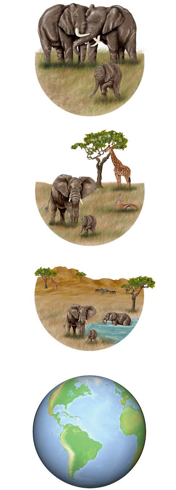
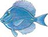
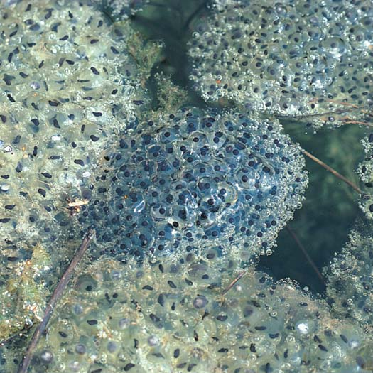

1 Una visión de la vida
1
El virus H1N1 es la causa de la infl uenza H1N1 (gripe). Las partículas del virus H1N1 (azul) son visibles en la célula (verde). Cuando esta cepa de virus emergió, el sistema inmunológico humano no reconocía su nueva combinación de genes. Como resultado, el virus se propagó fácilmente, causando una pandemia. El color de la micrografía electrónica de barrido (SEM) ha sido mejorado.
CONCEPTOS CLAVE
1.1 Los temas básicos de biología incluyen evolución, transferencia o fl ujo de información y transferencia o fl ujo de energía. 1.2 Las características de la vida incluyen estructura celular, crecimiento y desarrollo, metabolismo autorregulador, respuesta a los estímulos, y reproducción. 1.3 La organización biológica es jerárquica e incluye moléculas, célula, tejido, órgano, sistema de órganos e individuo; la organización ecológica incluye la población, comunidad, ecosistema y biosfera. 1.4 La transferencia de información incluye la del ADN de una generación a la siguiente, la transmisión de señales químicas y eléctricas dentro de las células de cada organismo y entre ellas, y de los productos químicos, así como de la información visual y sonora que permiten en conjunto a los organismos comunicarse unos con otros e interactuar con su entorno. 1.5 Los individuos y ecosistemas enteros dependen de un aporte continuo de energía. La energía fl uye dentro de las células y de un organismo a otro. 1.6 La evolución es el proceso mediante el cual los organismos de las poblaciones cambian con el tiempo, adaptándose a las modifi caciones en su entorno; el árbol de la vida incluye tres ramas principales, o dominios de vida. 1.7 Los biólogos se preguntan, formulan hipótesis, hacen predicciones y recogen datos de una cuidadosa observación y experimentación, y con base en sus resultados, llegan a conclusiones.
NIBSC/Science Photo Library
E
l brote de infl uenza H1N1 (gripe) se convirtió en el centro de atención mundial en abril de 2009. En pocos meses, más de 200 países habían notifi cado casos confi rmados de esta enfermedad viral, la gripe H1N1 había causado miles de muertes. De acuerdo con Centros para el Control y Prevención de Enfermedades (CDC), de Estados Unidos, más de 200 agentes patógenos conocidos (organismos causantes de enfermedades) tienen el potencial de amenaza mundial. Históricamente, las cepas virales nuevas han cobrado muchas vidas humanas. Por ejemplo, en 1918, una pandemia de gripe mató a más de 20 millones de personas en todo el mundo. Los epidemiólogos advierten que aún hoy en día una pandemia de gripe podría matar a millones de personas. Las pandemias como la gripe H1N1 tienen un impacto global negativo. Afectan muchos aspectos de la vida, como la economía, los viajes, el turismo y la educación. Armados con nueva tecnología, los biólogos trabajan estrechamente con profesionales de la salud pública y de otras áreas de la salud para prevenir pandemias peligrosas. Cuando surge un nuevo agente causante de enfermedad, los biólogos estudian sus relaciones evolutivas con patógenos conocidos. Por ejemplo, los investigadores han determinado que la pandemia de gripe de 1918 fue causada por el virus de infl uenza A (H1N1) que pudo haber mutado y recientemente emergido de una cepa porcina o aviar. La cepa de H1N1 que fue identifi cada en 2009 estuvo relacionada con el patógeno de 1918. Los biólogos determinaron que la cepa de H1N1 de 2009 evolucionó a partir de una combinación de cepas de este virus provenientes de cerdos, aves y seres humanos infectados. Además encontraron que esta cepa de H1N1 contiene una combinación única de segmentos de genes para los que los humanos no tienen inmunidad preexistente.
2 Capítulo 1
- Evolución. Las poblaciones de organismos han evolucionado a través del tiempo a partir de formas primitivas de vida. Los científi cos han acumulado una gran cantidad de evidencia que muestra que las diversas formas de vida en este planeta están relacionadas entre sí y que las poblaciones han evolucionado , es decir, han cambiado con el tiempo, a partir de las primeras formas de vida. El proceso de evolución es el marco para la ciencia de la biología y es un tema importante de este libro. 2. Transferencia o fl ujo de información. La información se debe transmitir dentro y entre los organismos, y éstos deben poder recibir información de su entorno. La supervivencia y la función de cada célula y cada organismo dependen de la transmisión ordenada de la información. La evolución depende de la transmisión de la información genética de una generación a otra. 3. Transferencia o fl ujo de energía . Todos los procesos de la vida, incluyendo miles de reacciones químicas que mantienen la organización de la vida, requieren de un aporte continuo de energía. La mayor parte de la energía utilizada por los seres vivos proviene de la luz solar. La energía del Sol se transfi ere a través de sistemas vivientes desde los productores a los consumidores; los descomponedores obtienen energía de los cadáveres y de desechos de los productores y consumidores de los que se alimentan. La energía también se transfi ere continuamente de un compuesto químico a otro dentro de cada célula.
La evolución, la transferencia de información y la transferencia de energía son las fuerzas que dan características únicas a la vida. Este estudio de la biología se inicia con el desarrollo de un conocimiento más preciso de las características fundamentales de los sistemas vivos.
Repaso
■ ¿Por qué la evolución, la transferencia de información y transferencia de energía se consideran básicas para la vida?
■ ¿Qué significa el término evolución aplicado a poblaciones de organismos?
1.2 CARACTERÍSTICAS DE LA VIDA
■ ■ OBJETIVO DE APRENDIZAJE
2 Distinguir entre seres vivos y cosas no vivas mediante la descripción de rasgos que caracterizan a los organismos vivos.
Es fácil reconocer que un árbol de pino, una mariposa, y un caballo son seres vivos, mientras que una roca no lo es. A pesar de su diversidad, los organismos que habitan en nuestro planeta comparten un conjunto de características comunes que los distinguen de las cosas inertes. Estas características incluyen una clase precisa de organización, crecimiento y desarrollo, de metabolismo autorregulado, la capacidad de responder a los estímulos, reproducción y la adaptación al cambio ambiental.
Los organismos están compuestos por células
Aunque varían mucho en tamaño y apariencia, todos los organismos consisten de unidades básicas llamadas células . Las nuevas células se forman sólo por la división de células previamente existentes. Como se analizará en el capítulo 4, estos conceptos se expresan en la teoría celular , un concepto unifi cador fundamental de la biología.
Conocer acerca de los orígenes de los virus proporciona pistas importantes sobre su estructura y comportamiento, y sugiere hipótesis para combatirla. Entonces, los científi cos deben probar sus hipótesis en el laboratorio. Los investigadores fueron capaces de determinar los antígenos (ciertas proteínas) en la superfi cie del H1N1. Estos antígenos se unen con los receptores de las células humanas para infectarlas. Con base en estudios detallados de la gripe H1N1, la vacuna se desarrolló rápidamente. Los agentes patógenos pueden atacar y expandirse rápidamente, y la continua evolución de los patógenos resistentes a los medicamentos constituye un reto importante. Las nuevas variedades de H1N1 siguen apareciendo, y los investigadores los deben caracterizar de forma rápida y evaluar su virulencia potencial. Los científi cos predicen que las nuevas variedades pueden mostrar una mayor resistencia a los medicamentos y pueden ser más virulentas. Además, las vacunas que se han desarrollado recientemente podrían no ser efectivas. Las enfermedades emergentes se tratarán más adelante en el capítulo 24. Este es un momento excitante para estudiar biología , la ciencia de la vida. Los importantes y nuevos descubrimientos biológicos que se están haciendo casi a diario afectan cada aspecto de nuestras vidas, incluyendo la salud, alimentación, seguridad, interacción con otras personas y seres vivos y con el entorno ambiental del planeta. Los conocimientos que surgen proporcionan nuevos puntos de vista acerca de la especie humana y de los millones de otros organismos con los que compartimos este planeta. La biología afecta nuestras decisiones personales, gubernamentales y sociales. Por ejemplo, se necesita un esfuerzo combinado de todos los niveles de la sociedad humana para proporcionar los recursos y conocimientos a fi n de enfrentar los desafíos de una pandemia mundial. Sea cual sea su especialidad universitaria o el objetivo de su carrera, los conocimientos de los conceptos biológicos son una herramienta vital para la comprensión de nuestro mundo y para cumplir con muchos de los retos personales, sociales y globales a los que nos enfrentamos. Entre estos desafíos están la creciente población humana, la disminución de la diversidad biológica, la disminución de los recursos naturales, el cambio climático global y la prevención y cura de enfermedades, tales como enfermedades del corazón, cáncer, diabetes, enfermedad de Alzheimer, síndrome de inmunodefi ciencia adquirida (SIDA), y la gripe. Enfrentar estos desafíos requerirá de los esfuerzos combinados de biólogos y otros científi cos, profesionales de la salud, educadores, políticos y ciudadanos con información de biología. Este libro es un punto de partida para la exploración de la biología. Le proporcionará los conocimientos básicos y las herramientas para ser parte de esta fascinante ciencia, así como un miembro más informado de la sociedad.
1.1 TRES TEMAS BÁSICOS
■ ■ OBJETIVO DE APRENDIZAJE
1 Describir los tres temas básicos de la biología.
En este primer capítulo se presentan los tres temas básicos de la biología. Ellos están conectados entre sí y con casi todos los conceptos que se analizan en este libro.
Una visión de la vida 3
La regulación de la concentración de la glucosa (un azúcar simple) en la sangre de los animales complejos es un buen ejemplo de un mecanismo homeostático. Sus células requieren un suministro constante de moléculas de glucosa, que se desdobla o rompe para obtener energía. El sistema circulatorio proporciona glucosa y otros nutrientes a todas las células. Cuando la concentración de glucosa en la sangre se eleva por encima de los límites normales, el exceso de glucosa se almacena en el hígado y en las células musculares en forma de glucógeno. Si usted no come durante unas cuantas horas, la concentración de glucosa empieza a bajar. Su cuerpo convierte los nutrientes almacenados en glucosa, regresando los niveles normales de glucosa en la sangre. Cuando la concentración de glucosa disminuye, usted siente hambre y al comer se restauran los nutrientes.
Algunas de las formas más simples de vida, como los protozoarios, son organismos unicelulares , lo que signifi ca que cada uno consta de una sola célula ( FIGURA 1-1 ). Por el contrario, el cuerpo de un perro o un árbol de arce están formados de miles de millones de células. En este tipo de organismos multicelulares complejos, los procesos de la vida dependen de las funciones coordinadas de sus componentes celulares que pueden estar organizadas en forma de tejidos, órganos y sistemas de órganos. Cada célula está envuelta por una membrana plasmática que la protege y separa del medio ambiente externo que la rodea. La membrana plasmática regula el paso de materiales entre la célula y su entorno. Las células tienen moléculas especializadas que contienen instrucciones genéticas y transmiten información genética. En la mayoría de las células, las instrucciones genéticas están codifi cadas en el ácido desoxirribonucleico, conocido simplemente como ADN . Las células normalmente tienen estructuras internas llamadas orgánulos u organelos que están especializados para realizar funciones específi cas. Fundamentalmente hay dos tipos diferentes de células: procariotas y eucariotas. Las células procariotas son exclusivas de las bacterias y organismos microscópicos llamados arqueas . Todos los otros organismos se caracterizan por sus células eucariotas . En general estas células contienen diversos orgánulos delimitados por membranas, incluyendo un núcleo , que alberga el ADN. Las células procariotas son estructuralmente más simples, no tienen un núcleo ni otros orgánulos delimitados por membranas.
Los organismos crecen y se desarrollan
El crecimiento biológico implica un aumento en el tamaño de las células individuales de un organismo, en el número de células, o en ambos. El crecimiento puede ser uniforme en las diversas partes de un organismo, o puede ser mayor en algunas partes que en otras, haciendo que las proporciones del cuerpo cambien a medida que se produce el crecimiento. Algunos organismos, por ejemplo la mayoría de los árboles, continúan creciendo durante toda su vida. Muchos animales tienen un período de crecimiento defi nido que termina cuando se alcanza el tamaño característico de adulto. Un aspecto interesante del proceso de crecimiento es que cada parte del organismo sigue funcionando normalmente a medida que crece. Los organismos vivos se desarrollan conforme crecen. El desarrollo incluye todos los cambios que tienen lugar durante la vida de los organismos. Al igual que muchos otros organismos, cada ser humano comienza su vida como un huevo fertilizado, que crece y se desarrolla. Las estructuras y la forma del cuerpo que se desarrollan están delicadamente adaptadas a las funciones que el organismo debe realizar.
Los organismos regulan sus procesos metabólicos
Dentro de todos los organismos, se realizan reacciones químicas y transformaciones de energía que son esenciales para la nutrición, el crecimiento y la reparación de las células, y la conversión de energía en formas útiles. La suma de todas las actividades químicas del organismo es su metabolismo . Los procesos metabólicos ocurren de manera continua en todos los organismos, y deben ser cuidadosamente regulados para mantener la homeostasis , un ambiente interno adecuado y equilibrado. Cuando se ha elaborado una cantidad sufi ciente de un producto celular, se debe disminuir o suspender su producción. Cuando se requiere una sustancia en particular, se deben activar los procesos celulares que la producen. Estos mecanismos homeostáticos son sistemas de control de autorregulación que son muy sensibles y efi cientes.
FIGURA 1-1 Formas de vida unicelulares y multicelulares
- Los organismos unicelulares constan de una compleja organización de la célula que realiza todas las funciones esenciales para la vida. Los ciliados como este Paramecium , se mueven batiendo sus cilios de aspecto piloso.
250 μ m
Mike Abbey/Visuals Unlimited, Inc.
- Los organismos multicelulares, como este búfalo africano ( Syncerus caffer ) y la hierba que pastan, pueden consistir en miles de millones de células especializadas para realizar funciones específicas.
© Andre Valadao/Shutterstock
4 Capítulo 1
Los organismos responden a estímulos
Todas las formas de vida responden a estímulos , a los cambios físicos o químicos en su ambiente interno o externo. Los estímulos que provocan una respuesta en la mayoría de los organismos son los cambios en el color, intensidad o dirección de la luz; cambios de temperatura, presión, o el sonido; y cambios en la composición química del suelo, del aire o del agua circundante. Responder a estímulos implica movimiento, aunque no siempre locomoción (moverse de un lugar a otro). En los organismos simples, el individuo entero puede ser sensible a los estímulos. Ciertos organismos unicelulares, por ejemplo, responden a la luz brillante retirándose. En algunos organismos, la locomoción se logra mediante la lenta formación de prolongaciones o seudópodos de la célula, el proceso de movimiento ameboide . Otros organismos se mueven batiendo las diminutas extensiones pilosas de la célula llamadas cilios o de estructuras más grandes conocidas como fl agelos ( FIGURA 1-2 ). Algunas bacterias se mueven haciendo rotar sus fl agelos. La mayoría de los animales se mueven de forma muy evidente. Se menean, gatean, nadan, corren o vuelan debido a la contracción de sus músculos. Las esponjas, corales y ostras tienen un nado libre en sus estadios larvarios, pero como adultos la mayoría son sésiles , lo que signifi ca que no se pueden mover de un lugar a otro. De hecho, pueden permanecer fi rmemente unidos a una superfi cie, tal como el fondo del mar o una roca. Muchos organismos sésiles tienen cilios o fl agelos que baten rítmicamente, llevándoles alimentos y oxígeno del agua circundante. Los animales complejos, como los saltamontes, lagartos, y los seres humanos, tienen células altamente especializadas que responden a tipos específi cos de estímulos. Por ejemplo, las células de la retina del ojo de los vertebrados responden a la luz. Aunque las respuestas pueden no ser tan obvias como las de los animales, las plantas responden a la luz, a la gravedad, al agua, al tacto, y otros estímulos. Por ejemplo, todas las plantas orientan sus hojas hacia el Sol y crecen hacia la fuente de luz. Muchas de las respuestas de las plantas implican diferentes tasas de crecimiento de varias partes del cuerpo de la planta. Algunas plantas, como la Venus atrapamoscas de los pantanos de Carolina, son muy sensibles al tacto y capturan insectos ( FIGURA 1-3 ). Sus hojas están articuladas a lo largo de la nervadura, y tienen un olor que atrae a los insectos. Los pelos se activan sobre la superfi cie de la hoja al detectar la llegada de un insecto y estimulan a la hoja para que se doble. Cuando se unen los bordes, se entrelazan, impidiendo el escape de los insectos. Enseguida la hoja segrega enzimas que matan y digieren al insecto. La Venus atrapamoscas por lo general crece en suelo defi ciente de nitrógeno. La planta obtiene parte del nitrógeno necesario para su crecimiento de los insectos que se “come”.
Los organismos se reproducen
Hace tiempo, la gente pensaba que los gusanos surgían de forma espontánea a partir de la crin del caballo en una
1 μ m
Flagelos
A. B. Dowsett/Science Photo Library/Photo Researchers, Inc.
FIGURA 1-2 Movimiento biológico Estas bacterias ( Helicobacter pylori ), equipadas con fl agelos para su locomoción, se han relacionado con las úlceras de estómago. La fotografía fue tomada con un microscopio electrónico de barrido. Las bacterias no son realmente de color rojo y azul. Su color se ha mejorado artifi cialmente.
- Los pelos en la superficie de las hojas de la Venus atrapamoscas ( Dionaea muscipula ) detectan el toque de un insecto, y la hoja responde doblándose.
© Gemsbok/Dreamstime
- Los bordes de la hoja se juntan y entrelazan, para impedir que la mosca se escape. Entonces la hoja segrega enzimas que matan y digieren el insecto.
David M. Dennis/Tom Stack & Associates
FIGURA 1-3 Plantas que responden a estímulos
Una visión de la vida 5
partir del óvulo fecundado. Los descendientes producidos por la reproducción sexual son el resultado de la interacción de varios genes aportados por la madre y el padre. Esta variación genética es importante en los procesos vitales de la evolución y la adaptación.
Las poblaciones evolucionan y se adaptan al medio ambiente
La capacidad de una población para evolucionar durante muchas generaciones y adaptarse a su entorno les permite sobrevivir en un mundo cambiante. Las adaptaciones son características que se heredan y que aumentan la capacidad de un organismo para sobrevivir en un entorno particular. La lengua larga y fl exible de la rana es una adaptación para capturar insectos, las plumas y los huesos livianos de los pájaros son adaptaciones para volar, y la gruesa cubierta del pelo del oso polar es una adaptación para sobrevivir a las gélidas temperaturas. Las adaptaciones pueden ser estructurales, fi siológicas, bioquímicas, de comportamiento, o una combinación de las cuatro ( FIGURA 1-5 ). Todos los orga nismos biológicamente exitosos son una compleja colección de adaptaciones coordinadas que se han producido a través de los procesos evolutivos.
Repaso
■ ¿Qué características distinguen a un organismo vivo de un objeto inanimado?
■ ¿Cuáles serían las consecuencias para un organismo si sus mecanismos homeostáticos fallaran? Explique su respuesta.
■ ¿Qué se entiende por adaptaciones?
1.3 NIVELES DE ORGANIZACIÓN BIOLÓGICA
■ ■ OBJETIVO DE APRENDIZAJE
3 Construir una jerarquía de organización biológica, que incluya los niveles característicos de los organismos individuales y los niveles característicos de sistemas ecológicos.
cubeta de agua, las larvas a partir de la carne en descomposición, y las ranas a partir del lodo del Nilo. Gracias al trabajo de varios científi cos, entre ellos el médico italiano Francesco Redi en el siglo xvii y el químico francés Louis Pasteur en el siglo xix, se sabe que todos los organismos provienen de otros organismos ya existentes. Los organismos simples, como las amebas, se perpetúan por reproducción asexual ( FIGURA 1-4a ). Cuando una ameba ha crecido hasta un tamaño determinado, se reproduce dividiéndose a la mitad para formar dos nuevas amebas. Antes de que se divida una ameba, su material hereditario (conjunto de genes ) se duplica, y un conjunto completo se distribuye en cada nueva célula. Excepto por el tamaño, cada nueva ameba es similar a la célula progenitora. La única manera de que se produzca la variación en un organismo de reproducción asexual es por mutación genética, un cambio permanente en los genes. En la mayoría de las plantas y animales, la reproducción sexual se lleva a cabo por la fusión de un óvulo y un espermatozoide para formar un óvulo fecundado ( FIGURA 1-4b ). El nuevo organismo se desarrolla a
- Reproducción asexual. Un individuo da lugar a dos o más descendientes que son similares al progenitor. Esta imagen muestra la división de la Difflugia , una ameba unicelular, para formar dos amebas.
100 μ m
Cabisco/Visuals Unlimited, Inc.
- Reproducción sexual. Generalmente, cada uno de los dos progenitores contribuye con un gameto (espermatozoide u óvulo). Los gametos se fusionan para producir los descendientes, cada uno de los cuales tienen una combinación de las características de ambos padres. Esta imagen muestra un par de moscas tropicales apareándose.
L. E. Gilbert/Biological Photo Service
FIGURA 1-4 Reproducción asexual y sexual
FIGURA 1-5 Adaptaciones Estas cebras de Burchell ( Equus burchelli ), fotografi adas en Tanzania, adaptan su comportamiento para ponerse en una situación conveniente a fi n de estar atentas ante los leones y otros depredadores. Se cree que las rayas son una adaptación para la protección visual contra los depredadores. Éstas les sirven como camufl aje o para romper la forma, cuando se ven a distancia. El estómago de la cebra está adaptado para alimentarse con pasto grueso que han dejado otros herbívoros, una adaptación que le ayuda al animal a sobrevivir cuando la comida escasea.
© Uryadnikov Sergey/Shutterstock
6 Capítulo 1
que viven en la misma área geográfi ca, al mismo tiempo constituyen una población . Las poblaciones de diversos tipos de organismos que habitan en un área particular e interactúan entre sí forman una comunidad . Una comunidad puede constar de cientos de diferentes tipos de organismos. Una comunidad, junto con su entorno inerte es un ecosistema . Un ecosistema puede ser tan pequeño como un estanque (o incluso un charco) o tan grande como las grandes planicies de América del Norte o la tundra ártica. Todos los ecosistemas de la Tierra en conjunto se conocen como la biosfera , que incluye a toda la Tierra habitada por organismos vivos, la atmósfera, la hidrosfera (agua en cualquier forma), y la litosfera (corteza de la Tierra). El estudio de cómo los organismos se relacionan entre sí y con su entorno físico se llama ecología (derivada del griego oikos , que signifi ca “casa”).
Repaso
■ ¿Cuáles son los niveles de organización dentro de un organismo?
■ ¿Cuáles son los niveles de organización ecológica?
1.4 TRANSFERENCIA DE INFORMACIÓN
■ ■ OBJETIVO DE APRENDIZAJE
4 Resumir la importancia de la transferencia de información dentro y entre los sistemas de vida, dando ejemplos específi cos.
Un organismo hereda la información que necesita para crecer, desarrollarse, autorregularse metabólicamente, responder a los estímulos, y reproducirse. Cada organismo contiene también instrucciones precisas para elaborar las moléculas necesarias para la comunicación de sus células. La información que un organismo requiere para realizar estos procesos de la vida se codifi ca y se transmite en forma de sustancias químicas e impulsos eléctricos. Los organismos también deben comunicar información entre sí.
El ADN transmite información de una generación a la siguiente
Los seres humanos procrean solamente bebés humanos, no jirafas o rosales. En los organismos que se reproducen sexualmente, cada descendiente es una combinación de los rasgos de sus padres. En 1953, James Watson y Francis Crick trabajaron con la estructura del ADN, la molécu la de gran tamaño que constituye los genes , que son las unidades de material hereditario ( FIGURA 1-7 ). Una molécula de ADN consiste de dos cadenas de átomos que se pliegan entre sí para formar una hélice. Como se describe en el capítulo 2, cada cadena se compone de una secuencia de subunidades químicas llamados nucleótidos . Hay cuatro tipos de nucleótidos en el ADN, y cada secuencia de tres nucleótidos es parte del código genético. El trabajo de Watson y Crick permitió entender este código genético. La información codifi cada en las secuencias de nucleótidos en el ADN transmite la información genética de generación en generación. El código funciona algo así como un alfabeto. Los nucleótidos pueden “deletrear” una asombrosa variedad de instrucciones para la creación de organismos tan diversos como las bacterias, las ranas y los árboles secoya. El código genético es universal, es decir, prácticamente idéntico en todos los organismos, un ejemplo dramático de la unidad de la vida.
Ya sea que se estudie un solo organismo o los seres vivos como un todo, se puede identifi car una jerarquía de organización biológica ( FIGURA 1-6 ). En cualquier nivel, la estructura y la función están estrechamente relacionados. Una forma de estudiar un nivel en particular es observando sus componentes. Los biólogos pueden ampliar su punto de vista sobre las células con el estudio de los átomos y moléculas que la componen. Al aprendizaje sobre una estructura mediante el estudio de sus partes se le llama reduccionismo . Sin embargo, el todo es más que la suma de sus partes. Cada nivel tiene propiedades emergentes , características que no se encuentran en los niveles inferiores. Las poblaciones de organismos tienen propiedades emergentes tales como densidad de población, estructura de edad y tasas de natalidad y de mortalidad. Los individuos que conforman una población no tienen estas características. Considere también el cerebro humano. El cerebro está compuesto de millones de neuronas (células nerviosas). Sin embargo, se podrían estudiar todas estas neuronas individuales y no tener idea de las capacidades funcionales del cerebro. Sólo cuando las neuronas se conectan entre sí de manera precisa se hacen evidentes las propiedades emergentes, tales como la capacidad para pensar, hacer juicios y la coordinación motora.
Los organismos presentan diferentes niveles de organización
El nivel químico, el más básico de la organización biológica, incluye átomos y moléculas. Un átomo es la unidad más pequeña de un elemen to químico que conserva las propiedades características de ese elemento. Por ejemplo, un átomo de hierro es la cantidad más pequeña posible de hierro. Los átomos se combinan químicamente para formar moléculas . Dos átomos de hidrógeno se combinan con un átomo de oxígeno para formar una sola molécula de agua. Aunque se compone de dos tipos de átomos que son gases, el agua puede existir como líquido o sólido. Las propiedades del agua son muy diferentes de las de sus componentes hidrógeno y oxígeno, este es un ejemplo de propiedades emergentes. A nivel celular, muchos tipos de átomos y moléculas se asocian entre sí para formar células . Sin embargo, una célula es mucho más que un montón de átomos y moléculas. Sus propiedades emergentes hacen de ésta la unidad básica estructural y funcional de la vida, el componente más simple de la materia viva que puede realizar todas las actividades necesarias para vivir. Durante la evolución de organismos multicelulares, las células se asociaron para formar tejidos . Por ejemplo, la mayoría de los animales tienen tejido muscular y tejido nervioso. Las plantas tienen epidermis, un tejido que sirve como una cubierta protectora, y tejidos vasculares que mueven los materiales a través del cuerpo de la planta. En la mayoría de los organismos complejos, los tejidos se organizan en estructuras funcionales llamadas órganos , tales como el corazón y el estómago en animales y las raíces y las hojas de las plantas. En los animales, cada grupo principal de funciones biológicas lo realiza un grupo coordinado de tejidos y órganos llamado sistema de órganos . Los sistemas circulatorio y digestivo son ejemplos de sistemas de órganos. Funcionando en conjunto con gran precisión, los sistemas de órganos constituyen un complejo organismo multicelular. Una vez más, las propiedades emergentes son evidentes. Un organismo es mucho más que los sistemas de órganos que lo componen.
Se pueden identifi car varios niveles de organización ecológica
Los organismos interactúan para formar niveles aún más complejos de organización biológica. Todos los miembros de una misma especie
Una visión de la vida 7
Organismo Los sistemas de órganos trabajan juntos para el funcionamiento del organismo.
Sistema de órganos (por ejemplo, sistema esquelético) Los tejidos y órganos forman los sistemas de órganos.
Órgano (por ejemplo, los huesos) Los tejidos forman los órganos.
Tejido (por ejemplo, el tejido óseo) Las células se asocian para formar tejidos.
Nivel celular Los átomos y las moléculas forman el citoplasma y los orgánulos, como el núcleo y la mitocondria (el lugar de muchas transformaciones energéticas). Los orgánulos realizan diversas funciones de la célula.
Nivel químico Los átomos se unen para formar moléculas. Las macromoléculas son grandes moléculas como las proteínas y el ADN.
Biosfera La Tierra y todas sus comunidades constituyen la biosfera.
Ecosistema Una comunidad junto con el medio ambiente inerte forma un ecosistema.
Comunidad Las poblaciones de diferentes especies que habitan la misma zona geográfica forman una comunidad.
Población Una población está formada por organismos de la misma especie. Organismo
Población
Comunidad
Ecosistema
Biosfera
Sistema de órganos
Órgano
Tejido
Célula
Orgánulo
Macromolécula
Molécula
Agua
Átomo de oxígeno
Células de los huesos
Núcleo
Átomos de hidrógeno
FIGURA 1-6 Animada La jerarquía de la organización biológica

8 Capítulo 1
Las células utilizan las proteínas y muchos otros tipos de moléculas para comunicarse entre sí. En un organismo multicelular, las células producen compuestos químicos como las hormonas , un tipo de señalizadores celulares. Las hormonas y otros mensajeros químicos pueden ser señalizadores celulares en órganos distantes para que secreten una sustancia necesaria en particular o para cambiar alguna actividad metabólica. De esta manera, las señales químicas ayudan a regular el crecimiento, el desarrollo y los procesos metabólicos. Los mecanismos implicados en la señalización celular a menudo involucran procesos bioquímicos complejos. La señalización celular es actualmente un área de intensa investigación. Un aspecto importante ha sido la transferencia de información entre las células del sistema inmunológico. Una mejor comprensión de cómo se comunican las células promete nuevos conocimientos sobre cómo el cuerpo se protege contra los organismos causantes de enfermedades. Aprender a manejar la señalización celular puede conducir a nuevos métodos de administración de fármacos en las células y nuevos tratamientos para el cáncer y otras enfermedades. Algunos organismos utilizan señales eléctricas para transmitir información. La mayoría de los animales tiene un sistema nervioso que transmite la información a través de impulsos eléctricos y compuestos químicos conocidos como neurotransmisores . La información transmitida desde una parte del cuerpo a otra es importante en la regulación de los procesos vitales. En los animales complejos, el sistema nervioso es el que provee la información acerca del ambiente exterior transmitiendo señales desde los receptores sensoriales como los ojos y los oídos al cerebro. La información también se debe transmitir de un organismo a otro. Los mecanismos para este tipo de comunicación incluyen la liberación de productos químicos como feromonas, las señales visuales y sonoras. Típicamente, los organismos utilizan una combinación de varios tipos de señales de comunicación. Un perro puede enviar señales de agresión al gruñir, con una expresión facial particular, y haciendo las orejas hacia atrás. Muchos animales realizan complejos rituales de cortejo en el que se muestran partes de sus cuerpos, a menudo elaboradamente decorados, para atraer a su pareja.
Repaso
■ ¿Cuál es la función del ADN?
■ Mencione dos ejemplos de señalización celular
1.5 LA ENERGÍA DE LA VIDA
■ ■ OBJETIVO DE APRENDIZAJE
5 Resumir el fl ujo de energía a través de los ecosistemas y contrastar el papel de los productores, consumidores y descomponedores.
La vida depende de un aporte continuo de energía del Sol ya que cada actividad de una célula viva o un organismo requiere energía. Siempre que se utiliza energía para realizar trabajo biológico, una parte de ella se convierte en calor y se dispersa en el ambiente. Recuerde que todas las transformaciones de energía y los procesos químicos que ocurren dentro de un organismo se conocen como su metabolismo . La energía es necesaria para realizar actividades metabólicas esenciales para el crecimiento, reparación y mantenimiento. Cada célula de un organismo requiere nutrientes que contienen energía. Durante la respiración celular , las células captan la energía liberada por las moléculas de nutrientes a través de una serie de reacciones químicas cuidadosamente reguladas ( FIGURA 1-8 ). La célula puede utilizar esta energía para hacer
La información se transmite por señales químicas y eléctricas
Los genes controlan el desarrollo y funcionamiento de cada organismo. El ADN que constituye los genes contiene las “recetas” para hacer todas las proteínas requeridas por el organismo. Las proteínas son moléculas grandes o macromoléculas importantes en la determinación de la estructura y función de las células y tejidos. Por ejemplo, las células del cerebro se diferencian de las células musculares en gran parte debido a que tienen diferentes tipos de proteínas. Algunas proteínas son importantes en la comunicación dentro y entre las células. Ciertas proteínas que se encuentran en la superfi cie de una célula sirven como marcadores de manera que otras células las “reconozcan”. Algunas proteínas de la superfi cie celular sirven como receptores que se combinan con los mensajeros químicos.
FIGURA 1-7 ADN El ADN es el material hereditario que transmite información de una generación a otra. Como se muestra en este modelo, el ADN es una macromolécula que consiste en dos cadenas de átomos que se pliegan entre sí para formar una hélice. Cada cadena se compone de subunidades llamadas nucleótidos. La secuencia de nucleótidos constituye el código genético.
Imagen computarizada de ADN por Geis/Stodola. No puede ser reproducida sin autorización.
Una visión de la vida 9
tener los nutrientes, la energía, el oxígeno y el dióxido de carbono. Hay un fl ujo unidireccional de energía a través de los ecosistemas. Los organismos no pueden crear energía ni utilizarla con total efi ciencia. Durante cada transacción de energía, se dispersa un poco de ella en el ambiente en forma de calor que ya no está disponible para el organismo ( FIGURA 1-9 ). Las plantas (donde se incluyen las algas) y algunas bacterias son productores, o autótrofos , porque producen su propio alimento a partir
su trabajo, incluyendo la síntesis de materiales necesarios para hacer una nueva célula. Prácticamente todas las células realizan respiración celular. Al igual que los organismos individuales, los ecosistemas también dependen de un aporte de energía continuo. Un ecosistema autosufi ciente contiene tres tipos de organismos: productores, consumidores y descomponedores, e incluye un entorno físico en el que puedan sobrevivir. Estos organismos dependen unos de otros y del ambiente, para ob-
La mayor parte de la energía para la vida proviene de la energía luminosa del Sol, que se capta durante la fotosíntesis, parte de esta energía se almacena en los enlaces químicos de la glucosa y otros nutrientes.
Síntesis de moléculas y estructuras necesarias
La fotosíntesis capta energía de la luz
Dióxido de carbono y agua
La energía almacenada en la glucosa y otros nutrientes
Oxígeno
Oxígeno
La respiración celular libera la energía almacenada en las moléculas de glucosa
Otras actividades de la vida r)PNFPTUBTJT r$SFDJNJFOUPZEFTBSSPMMP r3FQSPEVDDJÓO r.PWJNJFOUPEFNBUFSJBMFT dentro y fuera de las células r.PWJNJFOUPEFMDVFSQP
Energía luminosa
Energía
FIGURA 1-8 Flujo de energía dentro y entre los organismos
Las algas y ciertas células vegetales realizan la fotosíntesis, un proceso que utiliza energía del Sol para producir glucosa a partir de dióxido de carbono y agua. La energía se almacena en los enlaces químicos de la glucosa y de otros nutrientes producidos a partir de la glucosa. Mediante
el proceso de la respiración celular, las células de todos los organismos, incluyendo algas y células vegetales, desdoblan la glucosa y otros nutrientes. La energía liberada se puede utilizar con el fi n de producir las moléculas necesarias y el combustible para otras actividades de la vida.
PUNTO CLAVE

10 Capítulo 1
Los animales son consumidores o heterótrofos , es decir, organismos que dependen de los productores para obtener su alimento, energía y oxígeno. Los consumidores primarios se comen a los productores, mientras que los consumidores secundarios se comen a los consumidores primarios. Los consumidores obtienen energía rompiendo las moléculas de azúcares y otros alimentos producidos originalmente durante la fotosíntesis. Cuando los enlaces químicos se rompen durante el proceso de la respiración celular, la energía almacenada se hace accesible para los procesos vitales:
glucosa + oxígeno ¡ dióxido de carbono + agua + energía
Los consumidores contribuyen al equilibrio del ecosistema. Por ejemplo, los consumidores producen el dióxido de carbono requerido por los productores. (Observe que los productores también realizan respiración celular). El metabolismo de los consumidores y los productores ayuda a mantener la mezcla de los gases en la atmósfera para mantener la vida. La mayoría de las bacterias y los hongos son descomponedores , heterótrofos que obtienen nutrientes al descomponer material orgánico inerte como los desechos, hojas secas y ramas, y los cuerpos de los organismos muertos. En el proceso de obtención de energía, los descomponedores hacen que los componentes de estos materiales estén disponibles para su reutilización. Si los descomponedores no existieran los nutrientes permanecerían encerrados en los desechos y cadáveres, y el suministro de los elementos requeridos por los sistemas vivos no tardaría en agotarse.
Repaso
■ ¿Qué componentes se podrían incluir en un ecosistema forestal?
■ ¿De qué manera los consumidores dependen de los productores?, ¿de los descomponedores? Incluya los aspectos de la energía en su respuesta.
1.6 EVOLUCIÓN: EL CONCEPTO BÁSICO UNIFICADOR EN BIOLOGÍA
■ ■ OBJETIVOS DE APRENDIZAJE
6 Demostrar el uso del sistema de nomenclatura binominal mediante ejemplos específi cos para clasifi car un organismo (como un ser humano) en su dominio, reino, fi lo, clase, orden, familia, género y especie. 7 Identifi car los tres dominios y los reinos de los organismos vivos, y dar ejemplos de organismos asignados a cada grupo. 8 Describir brevemente la teoría científi ca de la evolución y explicar por qué es el concepto principal de unifi cación en la biología. 9 Aplicar la teoría de la selección natural para cualquier caso de adaptación dada y sugerir una explicación lógica de cómo esta adaptación pudo evolucionar.
La evolución es el proceso por el cual las poblaciones de organismos cambian con el tiempo. La teoría evolutiva se ha convertido en el concepto unifi cador más importante de la biología. Como veremos, la evolución consiste en pasar los genes de rasgos nuevos de una generación a otra, dando lugar a diferencias en las poblaciones. El punto de vista evolutivo es importante en cada campo especializado dentro de la biología. Los biólogos tratan de entender la estructura, función y comportamiento de los organismos y sus interacciones con otros, considerando estos aspectos a la luz de un largo y continuo proceso de evolución. Aunque la evolución se analizará en profundidad en los capítulos 18 a 22,
de materias primas simples. La mayoría de estos organismos utilizan la luz del Sol como fuente de energía para realizar la fotosíntesis , que es el proceso mediante el cual los productores sintetizan moléculas complejas tales como glucosa (un azúcar) a partir del dióxido de carbono y agua. La energía luminosa se transforma en energía química, que se almacena en los enlaces químicos de las moléculas de los alimentos producidos. El oxígeno, que es requerido por las células de la mayoría de los organismos, incluyendo las células vegetales, es un subproducto de la fotosíntesis:
dióxido de carbono + agua + energía de la luz ¡ glucosa + oxígeno
Descomponedores (bacterias, hongos)
Productor (planta)
Consumidor secundario (petirrojo)
Alimento
Calor
Calor
Calor
Calor
Hojarasca, desechos Cuerpos muertos
Suelo
Energía de la luz
Consumidor primario (oruga)
FIGURA 1-9 Animada Flujo de energía a través de la biosfera El ingreso continuo de energía solar sostiene el funcionamiento de la biosfera. Durante la fotosíntesis, los productores utilizan la energía luminosa del Sol para formar moléculas complejas de dióxido de carbono y agua. Los consumidores primarios, como la oruga que se muestra aquí, obtienen energía, nutrientes y otros materiales necesarios cuando se comen a los productores. Los consumidores secundarios, como el petirrojo, obtienen energía, nutrientes y otros materiales requeridos cuando ellos comen a los consumidores primarios que a su vez se han comido a los productores. Los descomponedores obtienen su energía y nutrientes al descomponer los desechos y materia orgánica muerta. Durante cada transacción de energía, un poco de energía se pierde en los sistemas biológicos, dispersándose en el ambiente como calor.
Una visión de la vida 11
tes. La familia Canidae, la Ursidae (osos), la Felidae (animales felinos), y varias otras familias que se alimentan principalmente de carne, hacen parte del orden Carnívora. El orden Carnívora, el orden Primates (al que pertenecen los chimpancés y los seres humanos), y algunas otras órdenes pertenecen a la clase Mammalia (mamíferos). La clase de los mamíferos se agrupa con otras clases como peces, anfi bios, reptiles y aves en el subfi lo de los vertebrados. Los vertebrados pertenecen al fi lo Chordata, que es parte del reino Animalia. Los animales se asignan al dominio Eukarya.
El árbol evolutivo de la vida incluye tres dominios y varios reinos
La sistemática misma ha evolucionado conforme los científi cos han creado nuevas técnicas para inferir un ancestro común entre los grupos de organismos. Como se va a aprender, los biólogos intentan clasifi car los organismos con base en las relaciones evolutivas. Estas relaciones se basan en las características comunes que distinguen a un grupo en particular. Un grupo de organismos con un antepasado común es un clado . Los sistemáticos han desarrollado un árbol de la vida , un árbol genealógico que representa las relaciones evolutivas entre los organismos. Estas relaciones se basan en características comunes, incluidas las similitudes estructurales, de desarrollo, de comportamiento, y moleculares, así como en la evidencia fósil. La FIGURA 1-11 es un cladograma , un diagrama de ramifi cación que representa el árbol de la vida tal y como se entiende actualmente. Conforme los investigadores reportan nuevos descubrimientos, la clasifi cación de los organismos cambia y las ramas del árbol de la vida se deben redibujar. Aunque el árbol de la vida es un trabajo en progreso, la mayoría de los biólogos en la actualidad asignan los organismos a uno de los tres dominios y reinos o clados. Las bacterias se han reconocido como las células procariotas unicelulares, que se diferencian de todos los demás organismos (excepto de las arqueas), en que son procariotas . El microbiólogo Carl Woese ha sido pionero en el desarrollo de métodos moleculares para la sistemática. Woese y sus colegas seleccionaron una molécula conocida como la subunidad pequeña del ARN ribosómico (ARNr) que funciona en el proceso de la fabricación de las proteínas en todos los organismos. Debido a su estructura molecular difi ere un poco en diferentes organismos, la hipótesis de Woese es que la composición molecular del ARNr en organismos que están estrechamente relacionados sería más similar que en los organismos distantemente relacionadas.
aquí se presenta una breve reseña con la información necesaria a fi n de comprender otros aspectos de la biología. En primer lugar, se exami nará cómo los biólogos organizan los millones de organismos que han evolucionado, y después se resumen algunos de los mecanismos que impulsan la evolución.
Los biólogos utilizan un sistema binominal para nombrar a los organismos
Los biólogos han identifi cado alrededor de 1.8 millones de especies de organismos existentes (actualmente vivos) y estiman que aún quedan varios millones más por descubrir. Para el estudio de la vida, se necesita un sistema para organizar, nombrar y clasifi car sus múltiples formas. La sistemática es el campo de la biología que estudia la diversidad de los organismos y sus relaciones evolutivas. La taxonomía , una subespecialidad de la sistemática, es la ciencia que clasifi ca y denomina los organismos. En el siglo xviii, Carolus Linneo, un botánico sueco, creó un sistema jerárquico para denominar y clasifi car los organismos. Los biólogos aún utilizan este sistema hoy en día, con algunas modifi caciones. La especie es un grupo de organismos con una estructura, función y comportamiento similar. Una especie se compone de una o más poblaciones cuyos miembros son capaces de reproducirse con otro; en la naturaleza, no se reproducen con miembros de otras especies. Los miembros de una población contribuyen a un acervo genético común (todos los ge nes presentes en la población) y comparten un ancestro común. Las especies estrechamente relacionadas se agrupan en la siguiente categoría más amplia de la clasifi cación, el género (plural, géneros ). El sistema de Linneo para denominar especies se conoce como sistema de nomenclatura binominal porque a cada especie se le asigna un nombre de dos partes. La primera parte del nombre es el género, y la segunda parte, el epíteto específi co , que designa una especie particular que pertenece a este género. El epíteto específi co es a menudo una palabra descriptiva que expresa una cualidad del organismo. Siempre se utiliza junto con el nombre genérico completo o abreviado que le precede. El nombre genérico siempre se escribe con mayúscula, y el epíteto específi co generalmente con minúscula. Ambos nombres se escriben siempre en cursiva o subrayado. Por ejemplo, el perro doméstico, Canis familiaris (abreviado C. familiaris ), y el lobo gris, Canis lupus ( C. lupus ), pertenecen al mismo género. El gato doméstico, Felis catus , pertenece a un género diferente. El nombre científi co del roble blanco americano es Quercus alba , mientras que el nombre del roble blanco europeo es Quercus robur . Otro árbol, el sauce blanco, Salix alba , pertenece a un género diferente. El nombre científi co de nuestra especie es Homo sapiens (“hombre sabio”).
La clasifi cación taxonómica es jerárquica
Así como las especies estrechamente relacionadas se pueden agrupar en un género común, los géneros relacionados se pueden agrupar en un grupo más amplio, en una familia . Las familias se agrupan en órdenes , las órdenes en clases , y las clases en fi los (singular, fi lo ). Los fi los se pueden asignar a reinos , y los reinos se agrupan en dominios . Cada agrupación formal a cualquier nivel es un taxón (plural, taxa ). Observe que cada taxón es más amplio que el taxón que está debajo de éste. Juntos forman una jerarquía que va de especie a dominio ( TABLA 1-1 y
FIGURA 1-10 ). Considere un ejemplo específi co. La familia Canidae, que incluye a todos los carnívoros (animales que comen principalmente carne) como los perros, se compone de 12 géneros y alrededor de 34 especies vivien-
Clasifi cación del gato, el humano, y el árbol de roble blanco
Categoría Gato Humano Roble blanco
Dominio Eukarya Eukarya Eukarya Reino Animalia Animalia Plantae Filo Chordata Chordata Anthophyta Subfi lo Vertebrata Vertebrata Ninguno Clase Mammalia Mammalia Eudicotyledones Orden Carnívora Primates Fagales Familia Felidae Hominidae Fagaceae Género Felis Homo Quercus Especie Felis catus Homo sapiens Quercus alba
TABLA 1-1
Los biólogos utilizan un esquema de clasifi cación jerárquica, con una serie de categorías taxonómicas desde especies a dominio, cada categoría es más general y más amplia que la de abajo.
Animalia
REINO
FILO
CLASE
ORDEN
FAMILIA
GÉNERO
ESPECIE
Pan
Chordata
Pan troglodytes
Pongidae
Primates
Mammalia
DOMINIO
Eukarya
FIGURA 1-10 Clasifi cación del chimpancé ( Pan troglodytes )
PUNTO CLAVE





Una visión de la vida 13
los dominios procarióticos: el reino Archaea corresponde al dominio Archaea, y el reino Bacteria corresponde al dominio Bacteria. Los otros reinos y grupos se asignan al dominio Eukarya. Los protistas (por ejemplo, los hongos mucilaginosos, las amebas, y los ciliados) son unicelulares, coloniales u organismos multicelulares simples que tienen una organización de células eucariotas. El mundo protista , del griego “el primero”, refl eja la idea de que los protistas fueron los primeros eucariotas en evolucionar. Los protistas son principalmente
Los resultados de Woese mostraron que hay dos grupos distintos de los procariotas. Él estableció el nivel de dominio de la taxonomía y asignó los procariotas en dos dominios: Bacteria y Archaea . Los eucariontes , organismos con células eucariotas, se clasifi can en el dominio Eukarya . El trabajo de Woese fue ampliamente aceptado a mediados de la década de 1990. En el sistema de clasifi cación utilizado en este libro, cada organismo se asigna a un dominio y un reino o “supergrupo”. Dos reinos conforman
Este cladograma muestra las relaciones evolutivas entre los tres dominios y entre los principales grupos de organismos que pertenecen a estos dominios.
Dominio Eukarya Dominio Bacteria Dominio Archaea
1 μ m 5 μ m 10 μ m
Bacterias Arqueas Protistas Plantas Animales Hongos
Ancestro común de todos los organismos
CNRI/Science Photo Library/ Photo Researchers, Inc.
R. Robinson/Visuals Unlimited, Inc.
David M. Phillips/Visuals Unl.
A. S. Floro/Shutterstock
McMurray Photography
Laurie Campbell/Getty Images
La bacteria en forma de bastón Bacillus anthracis , miembro del dominio Bacteria, causa el ántrax, una enfermedad de las vacas y ovejas que también puede afectar a los humanos.
Estas arqueas ( Methanosarcina mazei ), miembros del dominio Archaea, producen metano.
Estos protozoarios unicelulares ( Tetrahymena ) se clasifican en uno de los grupos protistas.
Las plantas incluyen muchas formas bellas y diversas, tales como la orquídea zapatito de dama ( Phragmipedium caricinum ).
Entre los animales más fieros, los leones ( Panthera leo ) se encuentran entre los más sociables. Son los de mayor tamaño en el grupo de los felinos y viven en manadas (grupos).
Los hongos como la mosca agárica ( Amanita muscaria ), se clasifican en el reino Hongos (Fungi). La amanita muscaria es venenosa, causa delirio, y excesiva sudoración cuando se ingiere.
FIGURA 1-11 Animada Un panorama de los tres dominios de vida Los biólogos clasifi can los organismos en los tres dominios, varios reinos y otros grupos taxonómicos. Los protistas no forman un clado, y ya no se consideran un reino. Se asignan en cinco “supergrupos” (que no se incluyen aquí).
PUNTO CLAVE

14 Capítulo 1
que las actuales formas de vida descienden, con modifi caciones, de las formas ya existentes. El libro de Darwin levantó una tormenta de controversia en la religión y la ciencia, algunas de los cuales aún persisten. La teoría de la evolución de Darwin ha ayudado a dar forma a las ciencias biológicas hasta nuestros días. Su trabajo generó una gran ola de observación científi ca e investigación que ha proporcionado mucha evidencia adicional de que la evolución es responsable de la gran diversidad de organismos en nuestro planeta. Incluso hoy en día, los detalles de los procesos evolutivos son un foco importante de investigación y análisis. Darwin basó su teoría de la selección natural en las siguientes cuatro observaciones:
- Los miembros individuales de una especie muestran alguna variación entre sí. 2. Los organismos producen muchos más descendientes que los que sobreviven y se reproducen ( FIGURA 1-12 ). 3. Debido a que se producen más individuos de lo que el ambiente puede soportar, los organismos deben competir por lo necesario, pero los recursos son limitados, tales como alimento, luz solar y el espacio. Además, algunos organismos son eliminados por los depredadores, por organismos que causan enfermedades (patógenos), o por las condiciones naturales desfavorables, tales como los cambios climáticos. ¿Qué organismos están más aptos para sobrevivir? 4. Los individuos con características que les permitan obtener y utilizar los recursos, escapar de los depredadores, resistir enfermedades causadas por otros organismos patógenos, y que soportan cambios en el ambiente tienen más probabilidades de sobrevivir hasta la madurez reproductiva. Los supervivientes que se reproducen pasan sus adaptaciones de supervivencia a su descendencia. De este modo, los
organismos acuáticos con diversidad de formas, tipos de reproducción, modos de nutrición y estilos de vida. Algunos protistas están adaptados para realizar la fotosíntesis. Basado principalmente en datos moleculares, que han aclarado muchas de las relaciones evolutivas entre los eucariotas, los protistas ya no se consideran un reino. Como se aprenderá en el capítulo 26, varios clados de protistas se han identifi cado, y muchos biólogos ahora clasifi can a los protistas en cinco “supergrupos”. Los miembros del reino Plantae (Plantas) son organismos multicelulares complejos adaptados para realizar la fotosíntesis. Entre las principales características de las plantas están la cutícula (una cubierta cerosa sobre las partes aéreas que reduce la pérdida de agua) y los estomas (pequeñas aberturas en los tallos y las hojas para el intercambio de gases), muchas plantas tienen gametangios multicelulares (órganos que protegen el desarrollo reproductivo de las células). El reino Plantae incluye tanto a las plantas no vasculares (musgos) como a las plantas vasculares (helechos, coníferas y plantas con fl ores), los que tienen tejidos especializados para el transporte de materiales en todo el cuerpo de la planta. La mayoría de las plantas se adaptan a los ambientes terrestres. El reino Hongos ( Fungi) se compone de las levaduras, mohos, hongos, y setas. Los hongos no realizan la fotosíntesis. Ellos obtienen sus nutrientes secretando enzimas digestivas en los alimentos y al absorber el alimento predigerido. El reino Animales ( Animalia) se compone de organismos multicelulares que se nutren al consumir otros organismos. La mayoría de los animales exhiben una considerable especialización celular y del tejido y organización del cuerpo. Estos caracteres han evolucionado junto con los órganos sensoriales complejos, el sistema nervioso y el sistema muscular. La mayoría de los animales se reproducen sexualmente, tienen grandes óvulos no móviles (no se mueven de un lugar a otro) y pequeños espermatozoides con fl agelos que los impulsa en su viaje para encontrar al óvulo. En este libro se ha presentado una introducción para los grupos de organismos que forman el árbol de la vida. Se hará referencia a ellos a lo largo de este libro, cuando se consideren los muchos tipos de retos que enfrentan los organismos y las diversas adaptaciones que han desarrollado en respuesta a ellos. Se analiza la diversidad de la vida con más detalle en los capítulos 23 a 32, y se presenta un resumen de la clasifi cación en el apéndice B.
Las especies se adaptan en respuesta a cambios en el ambiente
Cada organismo es el resultado de numerosas interacciones entre las condiciones ambientales y los genes heredados de sus ancestros. Si todos los individuos de una especie fueran exactamente iguales, cualquier cambio en el ambiente podría ser desastroso para todos, y la especie se extinguiría. Las adaptaciones de los seres vivos a los cambios en el ambiente se producen como consecuencia de los procesos evolutivos que tienen lugar en el tiempo e implican muchas generaciones.
La selección natural es un importante mecanismo por el cual la evolución sigue su curso
Aunque los fi lósofos y naturalistas analizaron el concepto de la evolución durante siglos, Charles Darwin y Alfred Wallace fueron los primeros que presentaron una teoría de la evolución a la atención general y sugirieron un mecanismo posible, la selección natural , para explicarla. En su libro Sobre el origen de las especies por selección natural , publicado en 1859, Darwin sintetizó los nuevos descubrimientos en la geología y la biología. Presentó sufi ciente evidencia para apoyar su hipótesis de
FIGURA 1-12 Masas de huevos de la rana de la madera ( Rana sylvatica ) Se producen muchos más huevos de los que se pueden convertir en ranas adultas. Diferentes sucesos aleatorios son en gran parte responsables de determinar cuáles de estas ranas en desarrollo nacerán, alcanzarán la edad adulta y se reproducirán. Sin embargo, ciertos rasgos de cada organismo también contribuyen a la probabilidad de éxito en su ambiente. No todos los organismos son tan prolífi cos como la rana, pero la generalización de que se producen más organismos que los que sobreviven es cierta en todo el mundo viviente.
J. Serrao/Photo Researchers, Inc.

Una visión de la vida 15
naron ( FIGURA 1-13 , vea también el capítulo 20 y la fi gura 20-18). Algunos mieleros ahora tienen picos largos y curvos, adaptados para alimentarse del néctar de las fl ores tubulares. Otros tienen picos cortos y gruesos para alimentarse de insectos, y otros se han adaptado para comer semillas.
Repaso
■ ¿Qué es el sistema de nomenclatura binominal?
■ Los biólogos describen el árbol de la vida como un trabajo en progreso. ¿Por qué se necesita modifi car este árbol?
■ ¿Cómo puede explicar las afi ladas garras y dientes de tigres en términos de selección natural?
1.7 EL PROCESO DE LA CIENCIA
■ ■ OBJETIVOS DE APRENDIZAJE
10 Diseñar una investigación para probar una hipótesis dada, utilizando el procedimiento y la terminología del método científi co. 11 Comparar los métodos del reduccionismo y de los sistemas para la investigación biológica.
La biología es una ciencia. La palabra ciencia proviene del latín y signifi ca “saber”. La ciencia es una forma de pensar y un método para investigar el mundo natural de una manera sistemática. Se ponen a prueba las ideas, y con base en los resultados, se modifi can o rechazan estas ideas. El proceso de la ciencia requiere investigación, es dinámico, y a menudo crea controversia. Las observaciones formuladas, el tipo de preguntas, y el diseño de experimentos dependen de la creatividad del propio científi co. Sin embargo, la ciencia se ve infl uida por los contextos culturales, sociales, históricos y tecnológicos, así el proceso cambia con el tiempo. El método científi co consiste en una serie de pasos ordenados. Utilizando el método científi co, los científi cos realizan observaciones cuidadosas, hacen preguntas importantes, y generan hipótesis , que son explicaciones tentativas. Usando sus hipótesis, los científi cos hacen predicciones que pueden probarse mediante observaciones adicionales o por la realización de experimentos. Reúnen datos , la información que pueden analizar, utilizando con frecuencia computadoras y sofi sticados métodos estadísticos. Interpretan los resultados de sus experimentos y
individuos mejor adaptados de una población, dejan en promedio más descendencia que otros menos adaptados. Debido a esta reproducción diferencial , una mayor proporción de la población se adapta a las condiciones ambientales prevalecientes y a los cambios. El ambiente selecciona a los organismos mejor adaptados para la supervivencia. Observe que la adaptación implica cambios en las poblaciones, más que en los organismos individuales .
Darwin no sabía nada de ADN ni comprendía los mecanismos de la herencia. Los científi cos ahora entienden que la mayoría de las variaciones entre los individuos son el resultado de las diferentes variedades de genes que codifi can cada característica. La principal fuente de estas variaciones son mutaciones aleatorias, cambios químicos o físicos en el ADN que persisten y se pueden heredar. Las mutaciones modifi can los genes y con este proceso proporcionan la materia prima para la evolución.
Las poblaciones evolucionan como resultado de presiones selectivas de los cambios en su entorno
Todos los genes presentes en una población constituyen su acervo genético . En virtud de su acervo genético, una población es una reserva de variación genética. La selección natural actúa sobre los individuos de una población. La selección favorece a los individuos con genes de características específi cas que les permitan responder efi cazmente a las presiones ejercidas por el ambiente. Estos organismos tienen más probabilidades de sobrevivir y reproducirse. Mientras que los organismos exitosos transmiten su componente genético para su supervivencia, sus rasgos son ampliamente distribuidos en la población. Con el tiempo, conforme las poblaciones sigan cambiando (y conforme el ambiente mismo cambia, trayendo diferentes presiones selectivas), los miembros de la población se adaptan mejor a su entorno y se parecen menos a sus antepasados. Conforme una población se adapta a las presiones ambientales y explota nuevas oportunidades para encontrar alimentos, manteniéndose segura, y evitando a los depredadores, la población se diversifi ca y las nuevas especies pueden evolucionar. Los mieleros hawaianos, un grupo de aves relacionadas, son un buen ejemplo. Cuando los antepasados de los mieleros hawaianos llegaron por primera vez, había algunas otras pocas aves presentes, así que había muy poca competencia. La variación genética entre los mieleros permitió a algunos mudarse a diferentes zonas de alimento, y con el tiempo, las especies con distintos tipos de picos evolucio-
El pico de este macho ’Akiapola’au ( Hemignathus munroi ) está adaptado para la extracción de larvas de insectos de la corteza. La mandíbula inferior (quijada) se utiliza para picotear y quitar la corteza, mientras que el maxilar (quijada superior) y la lengua se utilizan para agarrar la presa.
’I’iwi ( Vestiaria cocciniea ) sobre una flor ’ohi’a. El pico está adaptado para alimentarse del néctar de flores tubulares.
Palila ( Loxiodes bailleui ) en el árbol de Mamane. Este pinzón con pico mielero se alimenta de las semillas inmaduras de las vainas del árbol Mamane. También se alimenta de insectos, bayas y hojas jóvenes.
Jack Jeffrey, Inc.
Jack Jeffrey, Inc.
Jack Jeffrey, Inc.
FIGURA 1-13 Adaptación y diversifi cación en los mieleros hawaianos Las tres especies que se muestran aquí están en peligro de extinción, principalmente porque sus hábitats han sido destruidos por los seres humanos o por especies introducidas por ellos.
16 Capítulo 1
sos para examinar un problema. La ciencia busca dar un conocimiento preciso acerca del mundo natural, lo sobrenatural no es accesible a los métodos científi cos de investigación. La ciencia no es un sustituto de la fi losofía, la religión o el arte. Ser un científi co no impide participar en otros campos del quehacer humano, así como ser un artista no impide que uno practique la ciencia.
El razonamiento deductivo comienza con los principios generales
Los científi cos utilizan dos tipos de procesos de pensamiento sistemático: deducción e inducción. En el razonamiento deductivo , se provee de información en forma de premisas , y se generan conclusiones con base en esa información. La deducción obtiene a partir de principios generales, conclusiones específi cas. Por ejemplo, si se acepta la premisa de que todos los pájaros tienen alas y la segunda premisa que los gorriones son aves, se puede concluir deductivamente que los gorriones tienen alas. La deducción nos ayuda a descubrir las relaciones entre los hechos conocidos. Un hecho es información o conocimiento basado en la evidencia.
El razonamiento inductivo inicia con observaciones específi cas
El razonamiento inductivo es lo opuesto a la deducción. Se comienza con observaciones específi cas y se da una conclusión o se descubre un principio general. Por ejemplo, se sabe que los gorriones tienen alas, pueden volar, y son aves. También se sabe que los petirrojos, las águilas, las palomas y los halcones tienen alas, pueden volar, y son aves. Se podría inducir que todos los pájaros tienen alas y vuelan. De este modo, se puede utilizar el método inductivo para organizar los datos en bruto en categorías manejables y responder a esta pregunta: ¿Qué tienen todos estos hechos en común? Una debilidad del razonamiento inductivo es que en las conclusiones se generalizan los hechos de todos los ejemplos posibles. Cuando se formula el principio general, se parte de muchos ejemplos observados a todos los ejemplos posibles. Esto se conoce como un salto inductivo . Sin él, no podríamos llegar a generalizaciones. Sin embargo, debemos ser sensibles a las excepciones y la posibilidad de que la conclusión no sea válida. Por ejemplo, el pájaro kiwi de Nueva Zelanda no tiene alas funcionales ( FIGURA 1-15 ). No podemos nunca demostrar de manera concluyente una generalización universal. Las generalizaciones en las conclusiones inductivas proceden de la visión creativa de la mente humana, y la creatividad, por admirable que sea, no es infalible.
Los científi cos hacen observaciones cuidadosas y preguntas críticas
En 1928, el bacteriólogo británico Alexander Fleming observó que un moho azul había invadido uno de sus cultivos bacterianos. Casi lo descarta, pero luego se dio cuenta de que el área contaminada por el moho estaba rodeado por una zona donde las colonias de bacterias no crecían bien. Estas bacterias eran organismos del género Staphylococcus que pueden causar infecciones de la piel y furúnculos. ¡Todo lo que podía eliminarlas era interesante! Fleming conservó el moho, una variedad de Penicillium (moho azul del pan), y aisló el antibiótico penicilina a partir de éste. Sin embargo, tuvo difi cultad para cultivarlo. Aunque Fleming reconoció el benefi cio potencial práctico de la penicilina, no generó las técnicas químicas necesarias para purifi carla, y pasaron más de diez años antes de que el medicamento tuviera un uso signifi cativo. En 1939, sir Howard Florey y Ernst Boris Chain desarrollaron procedimientos químicos para extraer y producir el agente activo del moho
obtienen conclusiones a partir de éstos. Como se verá, los científi cos plantean muchas hipótesis que no se pueden demostrar mediante el uso de todos los pasos del método científi co de una manera estricta. Los científi cos utilizan el método científi co como un marco general o guía. Los biólogos exploran todos los aspectos imaginables desde la vida de las estructuras de los virus y bacterias a las interacciones de las comunidades de nuestra biosfera. Algunos biólogos trabajan principalmente en los laboratorios, y otros hacen su trabajo en el campo ( FIGURA 1-14 ). Quizá decida convertirse en un biólogo investigador y ayudar a desentrañar las complejidades del cerebro humano, descubrir nuevas hormonas que hagan fl orecer a las plantas, identifi car nuevas especies de animales o bacterias, o desarrollar nuevas estrategias con células madre para tratar el cáncer, el SIDA, o enfermedades del corazón. Las aplicaciones de investigaciones básicas de biología han proporcionado la tecnología para trasplantar riñón, hígado, y corazón; manipular genes; tratar muchas enfermedades, y aumentar la producción alimentaria mundial. La biología ha sido una fuerza poderosa en proporcionar la calidad de vida que a la mayoría de nosotros nos gusta. Puede elegir entrar en un campo aplicado de la biología, como la ciencia ambiental, odontología, medicina, farmacología o medicina veterinaria. Muchas carreras interesantes en ciencias biológicas se analizan en la sección de carreras en nuestro sitio Web.
La ciencia requiere de procesos de pensamiento sistemáticos
La ciencia es sistemática. Los científi cos suelen organizar y con frecuencia cuantifi can el conocimiento, haciéndolo realmente accesible a todos los que desean basarse en sus fundamentos. De esta manera, la ciencia es tanto un esfuerzo personal como social. La ciencia no es un misterio. Cualquiera que entienda sus reglas y procedimientos puede asumir sus retos. Lo que distingue a la ciencia es su insistencia en métodos riguro-
FIGURA 1-14 El trabajo del biólogo El estudio biológico del dosel del bosque tropical en Costa Rica es parte de un esfuerzo internacional para estudiar y conservar las selvas tropicales. Los investigadores estudian las interacciones de los organismos y los efectos de las actividades humanas sobre los bosques tropicales.
Mark Moffett/Minden Pictures
Una visión de la vida 17
Después de la generación de hipótesis, el científi co decide cuál, en su caso, podría y debería ser sometida a una prueba experimental. ¿Por qué no probar todas? El tiempo y el dinero son consideraciones importantes en la realización de las investigaciones. Los científi cos deben establecer prioridades entre las hipótesis para decidir cuál probar primero.
Una hipótesis refutable se puede probar
En ciencia, se puede probar una hipótesis bien establecida. Si no se encuentran evidencias que la soporten, la hipótesis se rechaza. Se puede demostrar que la hipótesis es falsa. Incluso los resultados que no apoyan la hipótesis pueden ser valiosos y pueden dar lugar a nuevas hipótesis. Si los resultados apoyan la hipótesis, un científi co los puede utilizar para generar hipótesis relacionadas. Se va a considerar una hipótesis que se puede poner a prueba mediante la observación cuidadosa: los mamíferos hembras (animales que tienen pelo y producen leche para sus crías) tienen crías vivas. La hipótesis se basa en las observaciones de que los perros, gatos, vacas, leones, y los seres humanos todos son mamíferos y todos tienen crías vivas. Considere, además, que una nueva especie, la especie X, se identifi ca como un mamífero con base en que tiene pelo y produce leche para sus crías. Los biólogos predicen que las hembras de las especies X tendrían crías vivas. (¿Es este un razonamiento inductivo o deductivo?) Si una hembra de la nueva especie da a luz a crías vivas, la hipótesis es apoyada. Antes de que se explorara el hemisferio sur, la mayoría de la gente probablemente habría aceptado la hipótesis, sin duda, porque todo animal peludo conocido, producía leche, de hecho, dan crías vivas. Sin embargo, los biólogos descubrieron que dos animales australianos (el ornitorrinco y el oso hormiguero espinoso) tienen pelo y producen leche para sus crías, pero ponen huevos ( FIGURA 1-16 ). La hipótesis, como se estableció, era falsa, sin importar cuántas veces se había soportado. Como resultado, los biólogos o bien tenían que considerar al ornitorrinco y al oso hormiguero espinoso como no mamíferos o tenían que ampliar su defi nición de mamíferos para poder incluirlos. (Optaron por lo segundo). Una hipótesis no es cierta sólo porque algunas de sus predicciones (que algunas personas han pensado o que han podido comprobar) se
de la penicilina. Florey llevó el proceso a los laboratorios en los Estados Unidos, y la penicilina se produjo por primera vez para tratar a soldados heridos en la Segunda Guerra Mundial. En reconocimiento a su trabajo, Fleming, Florey y Chain compartieron el Premio Nobel de Fisiología o Medicina en 1945.
La oportunidad con frecuencia desempeña un papel en el descubrimiento científi co
Fleming no se propuso descubrir la penicilina. Él se benefi ció del crecimiento oportuno de un moho en una de sus placas de cultivo. Sin embargo, podemos preguntarnos cuántas veces el mismo tipo de moho creció en los cultivos de otros bacteriólogos los cuales no pudieron hacer la conexión y simplemente se deshicieron de sus cultivos contaminados. Fleming se benefi ció de la casualidad, pero su mente estaba preparada para hacer observaciones y formular preguntas críticas, y su pluma estaba lista para su publicación. Los descubrimientos importantes se hacen de manera general por aquellos que tienen el hábito de observar críticamente la naturaleza y reconocer un fenómeno o un problema. Por supuesto que también debe estar disponible la tecnología necesaria para investigar el problema.
Una hipótesis es una afi rmación comprobable
Los científi cos hacen observaciones cuidadosas, hacen preguntas críticas y formulan hipótesis. Una hipótesis es una explicación tentativa de las observaciones o fenómenos. Las hipótesis se pueden plantear como declaraciones “si … entonces …”. Por ejemplo, si los estudiantes que están tomando introducción a la biología asisten a la clase, entonces van a tener una califi cación mayor en el examen que los estudiantes que no asisten a clases. En las primeras etapas de una investigación, un científi co por lo general piensa en muchas hipótesis posibles. Una buena hipótesis presenta las siguientes características: (l) es razonablemente coherente con hechos bien establecidos. (2) Se puede probar, es decir, debe generar predicciones defi nidas, si los resultados son positivos o negativos. Los resultados de la prueba también deben ser reproducibles por observadores independientes. (3) Es refutable, lo que signifi ca que se puede demostrar que es falsa, como se analiza en la siguiente sección.
FIGURA 1-15 ¿Este animal es un ave? El pájaro kiwi de Nueva Zelanda tiene aproximadamente el tamaño de una gallina. Sus diminutas alas de 2 pulgadas no le sirven para volar. Sobreviviente de una orden muy antigua de aves, el kiwi presenta plumas erizadas, similares a pelos y otras características que lo califi can como un ave.
C. Dani/Peter Arnold
FIGURA 1-16 ¿Este animal es un mamífero? El ornitorrinco ( Ornithorhynchus anatinus ) está clasifi cado como un mamífero porque tiene pelo y produce leche para sus crías. Sin embargo, a diferencia de la mayoría de los mamíferos, pone huevos.
Tom McHugh/Photo Researchers, Inc.

18 Capítulo 1
Sin embargo, los investigadores se preguntaron, ¿qué pasa si la operación en sí, y no la pérdida del núcleo, causó la muerte de la ameba? Realizaron un experimento controlado, sometiendo a dos grupos de amebas al mismo trauma microquirúrgico ( FIGURA 1-17 ). En el grupo experimental, el núcleo se retiró; y en el grupo de control no. Idealmente, un grupo experimental difi ere de un grupo de control sólo con respecto a la variable en estudio. En el grupo de control , el investigador insertaba un microlazo en cada ameba y lo empujaba hacia el interior de la célula para simular la eliminación del núcleo, después retiraba el instrumento, dejando el núcleo dentro. Las amebas tratadas con esta operación fi cticia se recuperaron y después crecieron y se dividieron. Este experimento demostró que era la eliminación del núcleo lo que causaba la muerte de las amebas, no simplemente la operación. La conclusión es que las amebas no pueden vivir sin su núcleo. Los resultados apoyan la hipótesis de que si las células pierden su núcleo, se
han demostrado. Después de todo, podrían ser verdaderas por casualidad. De hecho, una hipótesis puede ser apoyada por los datos, pero que no se puede probar que en realidad es verdadera. Una hipótesis irrefutable no se puede probar que sea falsa, de hecho, no se puede investigar científi camente. La creencia en una hipótesis irrefutable, como la existencia de duendes invisibles e indetectables, debe racionalizarse en otros campos distintos de los científi cos.
Los modelos son importantes en el desarrollo y en la prueba de hipótesis
Las hipótesis tienen muchas fuentes potenciales, incluidas las observaciones directas o incluso simulaciones por computadora. Cada vez más en la biología, las hipótesis se pueden derivar de los modelos que los científi cos han desarrollado para proporcionar una explicación detallada de un gran número de observaciones. Ejemplos de estos modelos comprobables incluyen el modelo de la estructura del ADN y del modelo de la estructura de la membrana plasmática (analizado en el capítulo 5). El mejor diseño para un experimento a veces se puede establecer mediante la realización de simulaciones en computadora. Las pruebas virtuales y la evaluación se efectúan antes de que el experimento se realice en el laboratorio o en el campo. El modelado y la simulación por computadora ahorran tiempo y dinero.
Muchas predicciones se pueden probar por experimentación
Una hipótesis es una idea abstracta, pero con base en ella, los científi cos pueden hacer predicciones que se pueden probar. Por ejemplo, podríamos predecir que los estudiantes de biología que estudian durante diez horas harán un mejor examen que los estudiantes que no estudian. Tal como se utiliza aquí, una predicción es una consecuencia deductiva, y lógica de una hipótesis. No tiene por qué ser un evento futuro. Algunas predicciones se pueden probar por medio de experimentos controlados. Los primeros biólogos observaron que el núcleo era la parte más prominente de la célula, e hipotetizaron que las células se verían afectadas negativamente si perdían sus núcleos. Los biólogos predijeron que si el núcleo se eliminaba de la célula, por consiguiente ésta moriría. Entonces experimentaron la extirpación quirúrgica del núcleo de una ameba unicelular. La ameba continuó viva y moviéndose, pero no crecía, y después de unos días murió. Estos resultados sugieren que el núcleo es necesario para los procesos metabólicos que proporcionan el crecimiento y la reproducción celular.
EXPERIMENTO CLAVE
PREGUNTAR EN FORMA CRÍTICA: ¿Por qué el núcleo es tan grande? ¿Cuál es su importancia?
FORMULAR UNA HIPÓTESIS : Las células se verán afectadas negativamente si pierden su núcleo.
REALIZAR UN EXPERIMENTO : Usando un microlazo, los investigadores quitaron el núcleo de cada ameba en el grupo experimental. Las amebas en el grupo de control se sometieron al mismo procedimiento quirúrgico, pero no se eliminó su núcleo.
La ameba vive
La ameba muere
Grupo experimental. Cuando el núcleo se extrae quirúrgicamente con un microlazo, la ameba muere.
Grupo de control. Una ameba de control sometida a un procedimiento quirúrgico similar (incluyendo la inserción de un microlazo), pero sin la eliminación del núcleo, no muere.
RESULTADOS: Las amebas sin núcleo murieron. Las amebas en el grupo de control vivieron.
CONCLUSIÓN : Las amebas no pueden vivir sin sus núcleos. La hipótesis tiene fundamento.
FIGURA 1-17 Prueba de una predicción respecto a la importancia del núcleo Los científi cos observaron que el núcleo era la parte más prominente de la célula. Se hicieron preguntas críticas acerca de su observación y se desarrolló la hipótesis de que las células se verían afectadas negativamente si perdían sus núcleos. Con base en sus hipótesis, hacen una predicción que se podría probar: si se extrae el núcleo de una ameba, ésta morirá. Entonces los investigadores realizaron experimentos para probar esta predicción. Los investigadores estudiaron los resultados y concluyeron que su hipótesis estaba fundamentada.

Una visión de la vida 19
ción utilizaban el palo, y una gran mayoría comenzó a utilizar los palos de la misma manera. Los chimpancés en cada grupo aprendieron el estilo específi co del uso del palo que a su chimpancé instruida le habían enseñado. La mayoría utilizaron el palo para obtener alimento por lo menos 10 veces. Dos meses después, el aparato dispensador se volvió a introducir en el ambiente de los chimpancés. Una vez más, la mayoría de los chimpancés utilizaron la técnica aprendida para la obtención de los alimentos. Los resultados del experimento apoyan la hipótesis. Los investigadores concluyeron que los chimpancés son capaces de transmitir la tecnología aprendida culturalmente.
El error de muestreo puede llevar a conclusiones inexactas
Una de las razones para llegar a conclusiones inexactas es el error de muestreo . Debido a que no todos los casos que se estudian se pueden observar o probar (los científi cos no pueden estudiar todas las amebas o cada población de chimpancés), los científi cos tienen que contentarse con una muestra. ¿Cómo pueden los científi cos saber si la muestra que están estudiando es verdaderamente representativa? Si la muestra es demasiado pequeña, puede no ser representativa debido a factores aleatorios. Un estudio con sólo dos, o incluso nueve, amebas pueden no dar datos fi ables que se puedan generalizar a otras amebas. Si los investigadores prueban con un gran número de sujetos, es más probable que se obtengan conclusiones científi cas precisas ( FIGURA 1-19 ). El científi co busca afi rmar con cierto nivel de confi anza que una determinada conclusión tiene una cierta probabilidad estadística de ser correcta.
Los experimentos deben ser reproducibles
Cuando los investigadores publican sus hallazgos en una revista científi ca, por lo general describen sus métodos y procedimientos con sufi ciente detalle para que otros científi cos puedan repetir los experimentos. Cuando los resultados se replican, las conclusiones son, por supuesto, fortalecidas.
Una teoría se apoya con la prueba de hipótesis
En ambientes no científi cos con frecuencia se utiliza la palabra teoría incorrectamente para referirse a una hipótesis o incluso una idea indemostrable que quieren promover. Una teoría científi ca es en realidad una explicación integrada de algún aspecto del mundo natural que se basa en una serie de hipótesis, cada una apoyada por resultados consistentes de muchas observaciones o experimentos. Una teoría científi ca se relaciona con los datos que anteriormente parecían no relacionados. Una buena teoría crece, sobre la base de datos adicionales que se van conociendo. Se predicen nuevos hechos y sugieren nuevas relaciones entre los fenómenos. Incluso puede sugerir aplicaciones prácticas. Una teoría científi ca, al demostrar las relaciones entre diferentes hechos, simplifi ca y clarifi ca la comprensión del mundo natural. Como Einstein escribió: “En toda la historia de la ciencia, desde la fi losofía griega hasta la física moderna, se han producido constantes intentos de reducir la aparente complejidad de los fenómenos naturales a ideas y relaciones simples y fundamentales”. El desarrollo de las teorías científi cas es sin duda un objetivo importante de la ciencia.
Muchas hipótesis no pueden ser probadas con experimentación directa
Algunas teorías aceptadas no se prestan a pruebas de hipótesis con experimentos comunes. Con frecuencia, estas teorías describen los eventos que ocurrieron en el pasado distante. No se puede observar directamente
ven afectadas negativamente. Se puede concluir que el núcleo es esencial para la supervivencia de la célula.
Los investigadores deben evitar el sesgo
En estudios científi cos, los investigadores deben hacer todo lo posible para evitar prejuicios o ideas preconcebidas de lo que debería suceder. Por ejemplo, para evitar el sesgo, actualmente, la mayoría de los experimentos médicos son del tipo de doble ciego. Cuando se prueba un fármaco, un grupo de pacientes recibe la medicación nueva, y un grupo de control de pacientes marcados reciben un placebo (una pastilla o píldora de almidón inofensiva similar en tamaño, forma, color y sabor a la que se está probando). El estudio doble ciego , es llamado así debido a que ni el paciente ni el médico saben quién está recibiendo el medicamento experimental y quién está recibiendo el placebo. Las píldoras o tratamientos están codifi cadas de alguna manera, y el código sólo se rompe después de que el experimento y los resultados se registran. No todos los experimentos pueden ser tan bien diseñados, por ejemplo, con frecuencia es difícil establecer controles apropiados.
Los científi cos interpretan los resultados de los experimentos y obtienen conclusiones
Los científi cos reúnen los datos de un experimento, interpretan sus resultados, y a continuación, obtienen sus conclusiones a partir de ellos. En el experimento de la ameba descrito anteriormente, los investigadores concluyeron que los datos apoyaban la hipótesis de que el núcleo es esencial para la supervivencia de la célula. Cuando los resultados apoyan la hipótesis, los científi cos pueden utilizarlos para generar hipótesis relacionadas. Incluso los resultados que no apoyan la hipótesis pueden ser valiosos y pueden dar lugar a nuevas hipótesis. Análisis de otro experimento. Equipos de investigadores que estudian las poblaciones de chimpancés en África han informado que dichos animales parecen aprender maneras específi cas de utilizar herramientas a partir del ejemplo de otros. El comportamiento que se aprende de los demás en una población y se pasa a las generaciones futuras es lo que se llama “cultura”. En el pasado, la mayoría de los biólogos pensaban que la cultura sólo ocurría en los seres humanos. Ha sido difícil probar este tipo de aprendizaje en la naturaleza, y la idea ha sido motivo de controversia. Los biólogos se han hecho preguntas críticas acerca de si los chimpancés aprendieron a utilizar las herramientas mediante la observación de uno al otro. Los investigadores del Yerkes National Primate Research Center en Atlanta, formularon la hipótesis de que los chimpancés pueden aprender determinadas formas de utilizar las herramientas mediante la observación de otros chimpancés. Predijeron que si un chimpancé enseña a otro a usar un palo para obtener alimentos de un dispensador, otros chimpancés también aprenderían la técnica ( FIGURA 1-18 ). Estos investigadores dividieron a los chimpancés en dos grupos experimentales con 16 en cada grupo. Entonces le enseñaron a una hembra de alto rango en cada grupo a usar un palo para obtener alimentos de un dispensador. A los dos chimpancés se les enseñó diferentes métodos. A un chimpancé se le enseñó a meter el palo en el interior del dispositivo para liberar los alimentos. Al otro se le enseñó a utilizar el palo para levantar un gancho que elimina un bloqueo, permitiendo que los alimentos cayeran fuera del dispositivo. Un tercer grupo sirvió como grupo de control. A los chimpancés de este grupo se les dio acceso a los palos y al aparato con los alimentos en su interior, pero a ninguno se le enseñó cómo usar los palos. Todos los chimpancés del grupo de control tocaron el aparato con el palo, pero ninguno tuvo éxito en la liberación de los alimentos. Cuando los chimpancés fueron devueltos a sus grupos, otros chimpancés observaron cómo los chimpancés que habían recibido instruc-
20 Capítulo 1
ejemplo, si los organismos complejos evolucionaron de formas de vida más simples, nos encontraríamos con los fósiles de los organismos más simples en los estratos más antiguos (las capas de roca). A medida que exploremos los estratos más recientes, podemos esperar encontrar a los organismos cada vez más complejos. De hecho, los científi cos han encontrado esta progresión de fósiles simples a complejos. Además de los fósiles, la evidencia de la evolución proviene de muchas fuentes, incluyendo las similitudes físicas y moleculares entre los organismos. La evidencia también proviene de estudios recientes y actuales de la evolución en acción. Muchos aspectos de la evolución
el origen del universo desde un estado muy caliente y denso hace aproximadamente 13.7 miles de millones de años (la teoría del Big Bang). Sin embargo, los físicos y los cosmólogos han podido formular muchas hipótesis relacionadas con el Big Bang y probar muchas de las predicciones derivadas de estas hipótesis. Del mismo modo, los seres humanos no observan la evolución de los principales grupos de organismos, ya que el proceso se llevó a cabo durante millones de años y se produjo antes que los humanos hubieran evolucionado. Sin embargo, se han planteado muchas hipótesis acerca de la evolución, y las predicciones con base en ellas se han probado. Por
EXPERIMENTO CLAVE
PREGUNTAR EN FORMA CRÍTICA: ¿Los chimpancés aprenden cómo utilizar las herramientas mediante la observación de uno al otro?
FORMULAR UNA HIPÓTESIS : Los chimpancés pueden aprender maneras particulares de utilizar herramientas mediante la observación de otros chimpancés.
REALIZAR UN EXPERIMENTO : Una hembra en cada uno de dos grupos de 16 chimpancés fue instruida de una forma específi ca para obtener alimentos mediante el uso de un palo. Las dos chimpancés instruidas fueron devueltas a sus respectivos grupos. A los chimpancés en el grupo de control no se les enseñó cómo usar el palo.
© David Bygott
RESULTADOS: Los chimpancés en cada grupo experimental observaron el uso del palo por la chimpancé instruida, y la mayoría comenzó a utilizar el palo de la misma manera. Cuando se realizó una prueba dos meses más tarde, muchos de los chimpancés en cada grupo seguían utilizando el palo. Los resultados que aquí se presentan se han simplifi cado y se basan en el número de chimpancés que se observaron utilizando el método aprendido al menos 10 veces. Todos menos uno en cada grupo de chimpancés aprendieron la tecnología, pero unos cuantos lo utilizaron sólo unas pocas veces. Algunos chimpancés aprendieron ellos mismos algún método alternativo y lo utilizaban. Sin embargo, el grupo más conformista usaba el método que el investigador enseñó a la chimpancé instruida.
CONCLUSIÓN: Los chimpancés aprenden formas especiales para la utilización de herramientas mediante la observación de otros chimpancés. La hipótesis es sustentada.
0
4
8
12
Control
Número de chimpancés Número de chimpancés
Exp. 1 Exp. 2
- Número de chimpancés que emplearon con éxito el método específico para utilizar la herramienta.
0
4
8
12
Control Exp. 1 Exp. 2
- Número de chimpancés que emplearon con éxito el método aprendido para el uso de la herramienta, dos meses más tarde.
FIGURA 1-18 Comprobación de una predicción acerca del aprendizaje en las poblaciones de chimpancés En la foto, se muestra un grupo de chimpancés salvajes que observa a uno de sus miembros utilizando una herramienta.
Una visión de la vida 21
formas de vida diminutas, bacterias y protistas, que no eran ni plantas ni animales. Los biólogos tuvieron que hacer un cambio de paradigma , es decir, cambiaron su visión de la realidad, para dar cabida a este nuevo conocimiento. Se asignaron estos organismos recién descubiertos a nuevos reinos. En un cambio de paradigma más reciente, los biólogos han revisado su idea de que se nace con todas las células del cerebro que siempre se tendrán. Ahora se sabe que ciertas áreas del cerebro continúan produciendo nuevas neuronas durante toda la vida.
La biología sistémica integra diferentes niveles de información
En el método reduccionista de la biología, los investigadores estudian los componentes más simples de los procesos biológicos. Su objetivo es sintetizar el conocimiento de muchas partes pequeñas para entender el todo. El reduccionismo ha sido (y sigue siendo) importante en la investigación biológica. Sin embargo, como los biólogos y sus herramientas se han vuelto cada vez más sofi sticados, se han generado grandes cantidades de datos, llevando a la ciencia de la biología a un nivel diferente. La biología de sistemas o biología sistémica es un campo de la biología que se construye con la información proporcionada con el método reduccionista y crea grandes conjuntos de datos, normalmente generados por computadora. La biología de sistemas también se conoce como la biología integrativa . El reduccionismo y la biología de sistemas son métodos complementarios. Usando el reduccionismo, los biólogos han descubierto información básica acerca de los componentes de los seres vivos, tales como moléculas, genes, células y órganos. Los biólogos de sistemas, que se centran en sistemas como un todo más que en componentes individuales, necesitan de este conocimiento básico para estudiar, por ejemplo, las interacciones entre las diversas partes y niveles de un organismo. Los biólogos de sistemas integran los datos de los distintos niveles de complejidad con el objetivo de comprender todo el panorama —cómo funcionan los sistemas biológicos—. Por ejemplo, los biólogos de sistemas están creando modelos de los diferentes aspectos de la función celular. La función celular normal depende de las acciones precisas de cientos de proteínas que transmiten señales recibidas de otras células. Las proteínas también transmiten señales desde una parte de la célula a otra. Los investigadores están produciendo mapas detallados de las vías moleculares que mantienen la función de las células ( FIGURA 1-20 ). Un grupo de investigadores ha diseñado un modelo que consta de casi 8000 señales químicas implicadas en una red molecular que conduce a la muerte celular programada. Al entender la comunicación celular, las interacciones de los genes y las proteínas en las vías metabólicas y en los procesos fi siológicos, los biólogos de sistemas esperan lograr con el tiempo un modelo de todo el organismo. La biología de sistemas se utiliza cada vez más para estudiar los procesos de enfermedad. Por ejemplo, se pueden mapear las interacciones entre un patógeno y la célula huésped. El desarrollo de la biología de sistemas se vio impulsado por la enorme cantidad de datos generados por el Proyecto Genoma Humano. Los investigadores que trabajan en este proyecto identifi caron las secuencias de ADN que conforman los aproximadamente 25,000 genes del genoma humano , el conjunto completo de genes que componen el material genético humano. Con los programas de computadora elaborados para el Proyecto Genoma Humano se pueden analizar conjuntos de datos muy grandes. Estos programas se están utilizando para integrar los datos sobre las interacciones de proteínas y muchos otros aspectos de la biología molecular. Los biólogos de sistemas ven la biología en términos de sistemas de información. Cada vez más dependen de los principios matemáticos, estadísticos y de ingeniería.
actual pueden, de hecho, ser estudiados en laboratorio o en campo. La evidencia de la evolución es tan convincente que casi todos los científi cos aceptan hoy la teoría evolutiva como una parte integral de la biología.
Los cambios de paradigma permiten nuevos descubrimientos
Un paradigma es un conjunto de suposiciones o conceptos que constituyen una forma de pensar acerca de la realidad. Por ejemplo, desde la época de Aristóteles hasta el siglo xix, los biólogos pensaban que los organismos eran ya sea plantas (reino Plantae) o animales (reino Animalia). Este concepto estaba profundamente arraigado. Sin embargo, con el perfeccionamiento de los microscopios, los investigadores descubrieron
Canicas
Canicas
Proporción real 20% azul 80% blanco
Proporción real 20% azul 80% blanco
30% azul 70% blanco
Selecciones múltiples
Suposición
produce
100% azul
Selección simple
Suposición
produce
Cortina
Realizar una selección simple puede dar como resultado un error de muestreo. Si la canica seleccionada es azul, se podría suponer que todas las canicas son de color azul.
Cuanto mayor sea el número de selecciones que se realizan de algo desconocido, es más probable que se puedan hacer suposiciones válidas al respecto.
Cortina
FIGURA 1-19 Animada Probabilidad estadística
22 Capítulo 1
productos contribuyen a nuestra calidad de vida. La nueva tecnología también proporciona a los científi cos herramientas más poderosas para su investigación y aumenta el potencial de nuevos descubrimientos. Por ejemplo, hace unos pocos años para determinar el genoma de cualquier eucarionte se necesitaban varias salas llenas de máquinas que podrían secuenciar los genes. Este esfuerzo también cuesta millones de dólares. Las nuevas tecnologías han revolucionado la secuenciación de genes, lo que permite que se determinen con rapidez a genomas complejos, con menos equipo, y a un costo mucho menor. Hay planes en marcha para determinar los genomas de 10,000 vertebrados. La ciencia y la tecnología continuarán cambiando la sociedad y estos cambios plantean nuevos retos. Además de ser éticos con su propio trabajo, los científi cos se enfrentan a muchos problemas sociales y políticos que rodean áreas como la investigación genética, la investigación con células madre, la clonación y la experimentación humana y animal. Por ejemplo, algunas células madre que muestran un gran potencial para el tratamiento de enfermedades humanas provienen de embriones tempranos. Las células se pueden tomar de embriones humanos de cinco o seis días de edad y después cultivarlas en el laboratorio. En esta etapa, el embrión es un grupo de células de aproximadamente 0.15 mm de largo (0.006 pulgadas). Estas células se podrían desarrollar para tratar fallas del corazón o del cerebro dañado por un accidente vascular cerebral, lesión, enfermedad de Parkinson o enfermedad de Alzheimer. Se podría salvar las vidas de las víctimas de quemaduras y quizá ser controladas para tratar cánceres específi cos. Los científi cos y la sociedad en general tendrán que determinar si los benefi cios potenciales de cualquier tipo de investigación son mayores que sus riesgos éticos. La era del genoma trae consigo muchos problemas éticos y responsabilidades. ¿Cómo se protegerá la confi dencialidad de la información genética? Por ejemplo, supongamos que usted tiene un historial familiar de cáncer de mama y aprende de las pruebas genéticas que tiene una de las mutaciones BRCA. Estas mutaciones aumentan el riesgo de desarrollar cáncer de mama y otros tipos de cáncer. ¿Cómo puede usted estar seguro de que el conocimiento de su código genético individual no sería usado en su contra cuando busque empleo o contrate un seguro de salud? Los científi cos deben ser éticamente responsables y deben ayudar a educar a la gente sobre su trabajo, incluyendo sus benefi cios en relación con sus riesgos. Es signifi cativo que muy al principio del Proyecto Genoma Humano, parte de su presupuesto se destinó a investigación de las implicaciones éticas jurídicas y sociales de sus descubrimientos.
Repaso
■ ¿Cuáles son las características de una buena hipótesis?
■ ¿Qué se entiende por un experimento “controlado”?
■ ¿Qué es la biología de sistemas?
La ciencia tiene dimensiones éticas
La investigación científi ca depende de un compromiso con los ideales prácticos, tales como la veracidad y la obligación de comunicar los resultados. La honestidad es particularmente importante en la ciencia. Considere el gran (aunque temporal) daño hecho cada vez que un investigador sin escrúpulos o incluso desesperado, cuya carrera puede depender de la publicación de un estudio de investigación, propaga a sabiendas, datos falsos. Hasta que se descubre el engaño, los investigadores pueden dedicar miles de dólares y de horas de mano de trabajo profesional a líneas de investigación inútiles inspirados por publicaciones erróneas. El engaño también puede ser peligroso, sobre todo en la investigación médica. Afortunadamente, la ciencia tiende a corregirse a través del uso consistente del proceso científi co. Tarde o temprano, es casi seguro que los resultados experimentales pongan en duda los datos falsos. La ciencia y la tecnología interactúan continuamente. Conforme los científi cos que hacen investigación básica reportan nuevos hallazgos, los ingenieros y otros inventores crean nuevos productos. Muchos de esos
1.1 ( página 2 )
1 Describir tres temas básicos de la biología.
■ Tres temas básicos de la biología son la evolución, la transferencia de información y la transferencia de energía. El proceso de la evolución da por resultado poblaciones que cambian con el tiempo y explica cómo los ancestros de los organismos se relacionan con las primeras formas de vida. La información se debe transmitir dentro de las células, entre células, entre organismos, y de una generación a la siguiente. La vida requiere una entrada continua de la energía del Sol.
1.2 ( página 2 )
2 Distinguir entre seres vivos y no vivos mediante la descripción de los rasgos que caracterizan a los organismos vivos.
■ Cada organismo vivo está compuesto de una o más células . Los seres vivos crecen al aumentar el tamaño y (o) número de sus células.
■ El metabolismo incluye todas las actividades químicas que tienen lugar en el organismo, incluyendo las reacciones químicas esenciales para la nutrición, crecimiento y reparación, y la conversión de la energía en formas utilizables. La homeostasis se refi ere a lo apropiado, a un ambiente interno equilibrado.
■ ■ RESUMEN: ENFOQUE EN LOS OBJETIVOS DE APRENDIZAJE
FIGURA 1-20 Mapa que muestra las interacciones proteicas en una célula de levadura ( Saccharomyces cerevisiae ) Cada punto representa una proteína en este hongo unicelular. Las líneas conectan las proteínas que interactúan entre sí. Las proteínas muy conectadas son más críticas para el funcionamiento celular. Muchas de estas interacciones también se han identifi cado en células humanas. Se retiraron proteínas específi cas para eliminar los genes que codifi can su producción. Las proteínas se han codifi cado con colores de acuerdo con el efecto que tiene su eliminación en la célula de levadura: rojo , letal; verde , no es letal; naranja , crecimiento más lento; amarillo, efectos desconocidos.
Hawoong Jeong, University of Notre Dame/Science Photo Library
Una visión de la vida 23
1.5 ( página 8 )
5 Resumir el fl ujo de energía a través de los ecosistemas y contrastar el papel de los productores, consumidores y descomponedores.
■ Las actividades de las células vivas requieren de energía. La vida depende de una fuente de energía continua del Sol. Durante la fotosíntesis, las plantas, algas y algunas bacterias utilizan la energía de la luz solar para sintetizar moléculas complejas a partir de dióxido de carbono y agua.
■ Prácticamente todas las células realizan respiración celular , un proceso bioquímico por el cual captan la energía almacenada en los alimentos, por los productores. Parte de esa energía se utiliza para sintetizar materiales requeridos o para realizar otras actividades celulares.
■ Un ecosistema autosufi ciente incluye a los productores o autótrofos , que elaboran su propio alimento, los consumidores primarios , que se alimentan de los productores, los consumidores secundarios que se alimentan de consumidores primarios, y los descomponedores , que obtienen energía a partir del rompimiento de moléculas en los desechos y los organismos muertos. Los consumidores y descomponedores son heterótrofos , organismos que dependen de los productores como una fuente de energía para obtener alimento y oxígeno.
Aprenda más acerca del fl ujo de energía, haga clic en la fi gura en CengageNOW.
1.6 ( página 10 )
6 Demostrar el sistema de nomenclatura binominal mediante el uso de ejemplos concretos y la clasifi cación de un organismo (como un humano) en su dominio, reino, fi lo, clase, orden, familia, género y especie.
■ Millones de especies han evolucionado. Una especie es un grupo de organismos con estructura, función y comportamiento similar, en la naturaleza, sólo se reproduce con otro. Los miembros de una especie contribuyen a un acervo genético común y comparten un ancestro común.
■ Los biólogos utilizan un sistema de nomenclatura binominal en la que el nombre de cada especie incluye un nombre de género y un epíteto específi co . La clasifi cación taxonómica es jerárquica, incluye especies, género, familia , orden , clase , fi lo , reino , y dominio . Cada agrupación se refi ere como un taxón . Un grupo de organismos con un antepasado común es un clado . 7 Identifi car los tres dominios y los reinos de los seres vivos, y dar ejemplos de los organismos asignados a cada grupo.
■ Las bacterias y las arqueas tienen células procariotas , todos los demás organismos tienen células eucariotas . Los procariotas forman dos de los tres dominios (Bacteria y Archaea).
■ Los organismos se clasifi can en tres dominios: Archaea , Bacteria y Eukarya y varios reinos: Archaea , Bacteria , Hongos (por ejemplo, mohos y levaduras), Plantas y Animales . Los Protistas (por ejemplo, algas, hongos de agua, los mohos del cieno, y las amebas) ahora se asignan a cinco “supergrupos”.
Aprenda sobre diversidad de la vida, haga clic en la fi gura en CengageNOW.
8 Dar una breve descripción de la teoría científi ca de la evolución y explicar por qué es el concepto principal de la unifi cación de la biología.
■ La evolución es el proceso mediante el cual las poblaciones cambian con el tiempo en respuesta a cambios en el ambiente. La teoría de la evolución explica cómo millones de especies llegaron a ser lo que son y nos ayuda a comprender la estructura, la función, el comportamiento y las relaciones de los organismos.
■ La selección natural , el mecanismo principal por el que la evolución avanza, favorece a los individuos con rasgos que les permitan hacer frente a cambios ambientales. Charles Darwin basó su teoría de la selección natural en sus observaciones de la variación de los individuos de una especie; los organismos producen más descendientes que sobreviven y se reproducen; los organismos deben competir por recursos limitados, y los individuos que mejor se adapten a su entorno tienen más probabilidades de sobrevivir, reproducirse y transmitir su información hereditaria. Sus rasgos se vuelven más ampliamente distribuidos en la población.
■ La fuente de variación en una población es la mutación aleatoria.
■ Los organismos responden a estímulos , los cambios físicos o químicos, en su ambiente externo o interno. Normalmente la respuesta incluye movimiento.
■ En la reproducción asexual , los descendientes son típicamente idénticos al progenitor, excepto por el tamaño; en la reproducción sexual , las crías son el producto de la fusión de los gametos, y sus genes por lo general son aportados por los dos padres.
■ Conforme las poblaciones evolucionan, se adaptan a su entorno. Las adaptaciones son características que aumentan la capacidad de un organismo para sobrevivir en su ambiente.
1.3 ( página 5 )
3 Construir una jerarquía de organización biológica, incluidos los niveles característicos de los organismos individuales y los niveles característicos de los sistemas ecológicos.
■ La organización biológica es jerárquica. Un organismo complejo se organiza en su química, célula, tejido , órgano , sistema de órganos , y los niveles del organismo . Las células se asocian para formar los tejidos que realizan funciones específi cas. En la mayoría de los organismos multicelulares, los tejidos se organizan para formar estructuras funcionales, llamadas órganos. Un grupo organizado de tejidos y órganos forman un sistema de órganos. Funcionando en conjunto, los sistemas de órganos constituyen un organismo complejo, multicelular.
Órgano
Tejido
Célula
Orgánulo
Células óseas
Núcleo
■ La unidad básica de la organización ecológica es la población . Varias poblaciones forman comunidades , una comunidad y su entorno físico conforman un ecosistema , todos los ecosistemas de la Tierra juntos constituyen la biosfera .
Aprenda más acerca de la organización biológica, haciendo clic en la fi gura en CengageNOW.
1.4 ( página 7 )
4 Resumir la importancia de la transferencia de información dentro y entre los sistemas vivos, dando ejemplos específi cos.
■ Los organismos transmiten información química, eléctrica, y de comportamiento.
■ El ADN , que constituye los genes , es el material hereditario. La información codifi cada en el ADN se transmite de una generación a la siguiente. El ADN contiene las instrucciones para el desarrollo de un organismo y para realizar los procesos de la vida. El ADN codifi ca las proteínas , que son importantes para determinar la estructura y función de cada célula y tejido.
■ Las hormonas , son mensajeros químicos que transmiten mensajes de una parte del organismo a otra, son importantes en la señalización celular .
■ Muchos organismos utilizan señales eléctricas para transmitir la información, la mayoría de los animales tienen sistemas nerviosos que transmiten los impulsos eléctricos y liberan neurotransmisores .
24 Capítulo 1
a descubrir relaciones entre los hechos conocidos. El razonamiento inductivo comienza con observaciones específi cas y obtiene conclusiones de ellas. El razonamiento inductivo nos ayuda a descubrir principios generales.
■ Una hipótesis es una explicación provisional de las observaciones o fenómenos. Una hipótesis se puede probar. Si no encuentra evidencia que la soporte, se rechaza la hipótesis.
■ Un experimento científi co bien diseñado por lo general incluye un grupo de control y un grupo experimental y debe estar lo más libre posible de prejuicios. El grupo de control debe ser lo más parecido posible al grupo experimental. Idealmente, el grupo experimental difi ere del grupo de control sólo con respecto a la variable que se está estudiando.
Para hacer su propio muestreo aleatorio haga clic en la fi gura de CengageNOW.
■ Una teoría científi ca es una explicación integrada de algún aspecto del mundo natural que se basa en una serie de hipótesis, cada una apoyada por los resultados consistentes de muchas observaciones o experimentos. 11 Comparar los métodos del reduccionismo y de los sistemas en la investigación biológica.
■ Usando el reduccionismo, los investigadores estudian los componentes más simples de los procesos biológicos, por ejemplo, moléculas o células. La biología de sistemas utiliza los conocimientos proporcionados por el reduccionismo. Los biólogos de sistemas integran los datos de distintos niveles de complejidad con el objetivo de comprender cómo funcionan los sistemas biológicos.
9 Aplicar la teoría de la selección natural para cualquier adaptación dada y sugerir una explicación lógica de cómo la adaptación puede haber evolucionado.
■ Cuando los antepasados de los primeros mieleros hawaianos llegaron a Hawai, otras pocas aves estaban presentes, así que había muy poca competencia por la comida. A través de muchas generaciones, los mieleros, con picos largos y más curvados se adaptaron a alimentarse del néctar de las flores tubulares. Quizá los que tienen los picos más largos, y más curvados eran más capaces de sobrevivir en esta zona de alimentos y han vivido para transmitir sus genes a su descendencia. Los que tienen el pico más corto, y más grueso tuvieron más éxito alimentándose de insectos y pasan sus genes a las nuevas generaciones de descendientes. Finalmente, las diferentes especies evolucionaron, se han adaptado a zonas específi cas de alimentos.
1.7 ( página 15 )
10 Diseñar un estudio para probar una hipótesis dada, utilizando el procedimiento y la terminología del método científi co.
■ El proceso de ciencia es un método dinámico de la investigación. El método científi co es un marco general que usan los científi cos en su trabajo; incluye la observación, el reconocimiento de un problema o estableciendo una pregunta crítica, la formulación de una hipótesis, haciendo una predicción que se puede probar, haciendo nuevas observaciones, realizando experimentos, interpretando los resultados, y obteniendo conclusiones que apoyan o falsifi can la hipótesis.
■ El razonamiento deductivo e inductivo son dos categorías de pensamiento sistemático utilizados en el método científi co. El razonamiento deductivo procede de principios generales a conclusiones concretas y nos ayuda
La homeostasis (a) corresponde al equilibrio del ambiente interno, (b) es la suma de todas las actividades químicas de un organismo (c) es la respuesta a largo plazo de los organismos a los cambios en su entorno (d) se produce a nivel del ecosistema, no en células u organismos (e) puede ser sexual o asexual
Una ameba se divide en dos amebas más pequeñas. Éste es un ejemplo de (a) homeostasis (b) neurotransmisión (c) reproducción asexual (d) reproducción sexual (e) metabolismo
Las células (a) son los componentes básicos de los organismos vivos (b) siempre tienen núcleo (c) no se encuentran entre bacterias (d) a, b y c (e) a y b
¿Cuál de las siguientes es una secuencia correcta de los niveles de organización biológica?
órganos del sistema 2. químico 3. tejido 4. órgano 5. célula (a) 2, 3, 5, 4, 1 (b) 5, 3, 4, 1, 2 (c) 2, 5, 3, 1, 4 (d) 2, 5, 3, 4, 1 (e) 5, 2, 3, 4, 1
¿Cuál de las siguientes es una secuencia correcta de los niveles de organización ecológica?
comunidad 2. organismo 3. ecosistema 4. población 5. biosfera
- 5, 3, 1, 4, 2 (b) 2, 4, 1, 3, 5 (c) 2, 1, 4, 3, 5 (d) 4, 2, 1, 3, 5 (e) 2, 4, 3, 1, 5
El ADN (a) se produce durante la respiración celular (b) funciona principalmente para transmitir la información de una especie a otra (c) no se puede cambiar (d) es un neurotransmisor (e) constituye los genes
La respiración celular (a) es un proceso mediante el cual la luz del Sol se utiliza para sintetizar componentes de la célula con la liberación de energía (b) se produce en heterótrofos solamente (c) se realiza tanto por autótrofos como por heterótrofos (d) causa cambios químicos en el ADN (e) se produce en respuesta a los cambios ambientales
Los hongos están asignados al dominio (a) Protista (b) Archaea (c) Bacteria (d) Eukarya (e) Plantas
El nombre científi co del maíz es Zea mays . Zea es el (a) epíteto específi co (b) género (c) clase (d) reino (e) fi lo
Darwin sugirió que la evolución se realiza por (a) mutación (b) cambios en los individuos de una especie (c) selección natural (d) interacción de las hormonas durante la competencia por los recursos (e) respuestas homeostáticas a cada cambio en el entorno
Idealmente, un grupo experimental difi ere de un grupo de control (a) sólo con respecto a la hipótesis que está siendo probada (b) porque sus sujetos son más fi ables (c) en que está menos sujeto a sesgo (d) en que es menos vulnerable a errores de muestreo (e) sólo con respecto a la variable en estudio
Un biólogo de sistemas lo más probable es que trabaje en (a) comprender mejor los componentes de las células (b) desarrollo de un mejor sistema de clasifi cación de los organismos (c) creación de una nueva serie de pasos para el método científi co (d) investigación de una serie de reacciones que comunican la información en la célula (e) identifi cación de las conexiones e interacciones de las neuronas con el fi n de aprender acerca de la función cerebral
EVALÚE SU COMPRENSIÓN
Una visión de la vida 25
- Identifi car el dominio y los reinos escribiendo el nombre de cada una de las líneas en blanco.
Bacteria Archaea
Grupos protistas
Ancestros comunes de todos los organismos
¿Qué pasaría si fallara un mecanismo homeostático? Describa un mecanismo homeostático que trabaje en su cuerpo (que sea distinto del de regulación de la glucosa citado en este capítulo).
Compare el método reduccionista con la biología de sistemas. ¿Cómo se complementan los dos métodos? ¿Qué método es más probable que considere las propiedades emergentes?
¿Cuáles son algunas características de una buena hipótesis? Dé un ejemplo.
Haga una predicción y diseñe un experimento controlado adecuadamente para probar cada una de las siguientes hipótesis: (a) Un tipo de moho encontrado en su jardín produce un antibiótico efi caz. (b) La tasa de crecimiento de una plántula de frijol se ve afectada por la temperatura. (c) Los estrógenos alivian los síntomas de la enfermedad de Alzheimer en las mujeres de edad avanzada.
VÍNCULO CON LA EVOLUCIÓN. ¿De qué manera depende la evolución de la transferencia de información? ¿De qué modo la transferencia de información depende de la evolución?
VÍNCULO CON LA EVOLUCIÓN. ¿Cómo podría ayudar el conocimiento de los procesos evolutivos a un biólogo que está ha-
ciendo investigación en (a) comportamiento animal, por ejemplo, el comportamiento del cazador de leones? (b) el desarrollo de un nuevo antibiótico para sustituir uno al que las bacterias lo han vuelto resistente? (c) la conservación de una planta específi ca en una selva tropical?
ANÁLISIS DE DATOS. Compare las dos gráfi cas de la fi gura 1-18. ¿Qué información ilustra la segunda gráfi ca? ¿Qué posible explicación puede darle a las diferencias que se muestran en las dos gráfi cas?
CIENCIA, TECNOLOGÍA Y SOCIEDAD. La nueva tecnología está permitiendo a los científi cos crear terapias efi caces de genes para tratar enfermedades graves. En el futuro la terapia génica se puede utilizar para tratar condiciones tales como la adicción o trastornos bipolares. ¿Qué pasa si la terapia de genes se pudiera utilizar para producir niños con capacidad atlética, capacidad artística, o alto índice de inteligencia? ¿Tiene preocupaciones éticas sobre estas posibilidades? Si es así, dónde y cómo se marca la línea?
Preguntas adicionales están disponibles en CengageNOW en www.cengage.com/login.
PENSAMIENTO CRÍTICO